pacman::p_load(readr, dplyr, lubridate, ggplot2, tmap, sf, spNetwork, spatstat, plotly, gtsummary, sparr, terra, tidyr, tidyverse)Take-home Exercise 01
Applying spatial and spatio-temporal point pattern analysis methods to identify factors affecting road traffic accidents in the Bangkok Metropolitan Region.
1 Assignment: Geospatial analytics for Public safety
Reference: ISSS626 Take-home Exercise 1: Geospatial Analytics for Public Safety
2 Overview
This take-home exercise investigates the spatial and/or spatio-temporal patterns of public-safety point events using road traffic accidents within the Bangkok Greater Metropolitan Area.
The object of the exercise are:
To prepare and integrate real-world geospatial and temporal data for spatial and spatio-temporal point-pattern analysis.
To investigate first-order properties of the point pattern by examining how the intensity or distribution of events varies across space and/or time.
To investigate second-order properties by examining whether events exhibit evidence of spatial or spatio-temporal interaction, such as clustering, inhibition, or approximate randomness.
To critically evaluate the analytical assumptions, methodological choices, and limitations associated with the selected point-pattern methods.
To communicate the analytical findings effectively through appropriate geovisualisation and geocommunication.
To translate the analytical evidence into meaningful implications for public-safety planning and management.
3 The data
The following 3 datasets will be used in this exercise.
| Dataset Name | Description | Format | Source |
|---|---|---|---|
| Thailand Road Accident [2019-2022] | Data on road accidents in Thailand, including details on location, severity, and date of incidents. | CSV | Kaggle |
| Thailand Roads (OpenStreetMap Export) | OpenStreetMap Geospatial data of Thailand. | ESRI Shapefile | Humanitarian Data Exchange (HDX) |
| Thailand - Subnational Administrative Boundaries | Boundaries of Thailand’s Geospatial dataset. | ESRI Shapefile | Humanitarian Data Exchange (HDX) |
About Thailand Road Accident dataset
This dataset provides comprehensive statistics on recorded road accidents in Thailand, spanning from approximately 2019 to 2022. The data was sourced from raw information provided by the Office of the Permanent Secretary, Ministry of Transport, which is also utilized in this public dashboard for easier access and visualization. The dataset encompasses various aspects of road accidents and aims to shed light on the trends and patterns within this critical area of concern, analysis of this data could be crucial in guiding road safety policies and measures.
| Column | Description |
|---|---|
| acc_code | The accident code or identifier. |
| incident_datetime | The date and time of the accident occurrence. |
| report_datetime | The date and time when the accident was reported. |
| province_th | The name of the province in Thailand, written in Thai. |
| province_en | The name of the province in Thailand, written in English. |
| agency | The government agency responsible for the road and traffic management. |
| route | The route or road segment where the accident occurred. |
| vehicle_type | The type of vehicle involved in the accident. |
| presumed_cause | The presumed cause or reason for the accident. |
| accident_type | The type or nature of the accident. |
| number_of_vehicles_involved | The number of vehicles involved in the accident. |
| number_of_fatalities | The number of fatalities resulting from the accident. |
| number_of_injuries | The number of injuries resulting from the accident. |
| weather_condition | The weather condition at the time of the accident. |
| latitude | The latitude coordinate of the accident location. |
| longitude | The longitude coordinate of the accident location. |
| road_description | The description of the road type or configuration where the accident occurred. |
| slope_description | The description of the slope condition at the accident location. |
The original data has total 81735 accident records in all over Thailand from 2019-2022.
4 Data preparation
Install and load R packages
Noteset reproducibility value
In order to ensures that stochastic algorithms and randomized spatial processes yield identical results every time the workflow runs, we need to set reproducibility value.
set.seed(1234)Import road traffic accident data
Loading Thailand road traffic accidents 2019-2022.
bmr_acc <- read_csv(
"data/thai_road_accident_2019_2022.csv",
show_col_types = FALSE
)Checking for missing values
null_counts <- sum(is.na(bmr_acc))
null_counts[1] 718The dataset contains 718 missing values in total. We will check for missing values in each column to identify which columns have missing data. Listing the number of missing values for each column in the dataset
data.frame(
Column = colnames(bmr_acc),
Missing_Values = colSums(is.na(bmr_acc))
)There are 359 missing values in the latitude column and 359 missing values in the longitude column. Since these columns are crucial for spatial analysis, we will remove rows with missing values in these columns.
From Wikipedia, Bangkok Metropolitan Region (BMR) is the capital and most populous city of Thailand. It is located in the central part of the country, on the Chao Phraya River delta. The BMR consists of Bangkok and its surrounding provinces, including Nonthaburi, Pathum Thani, Samut Prakan, Nakhon Pathom, and Samut Sakhon. The dataset contains information on the location, severity, and date of accidents, which will be used for spatial and spatio-temporal point-pattern analysis.
bmr_acc_sf <- bmr_acc %>%
filter(province_en == "Bangkok" | province_en == "Nonthaburi" | province_en == "Pathum Thani" | province_en == "Samut Prakan" | province_en == "Nakhon Pathom" | province_en == "Samut Sakhon") %>%
#filter(year(incident_datetime) == 2022) %>%
filter(!is.na(longitude), !is.na(latitude)) %>%
st_as_sf(coords = c("longitude", "latitude"), crs = 4326) %>%
st_transform(crs = 32647) # UTM Zone 47N (EPSG:32647) for Bangkok Metropolitan RegionVerifying that the missing values have been removed
null_counts_after <- sum(is.na(bmr_acc_sf))
null_counts_after[1] 0Next we check for duplicate records in the dataset. Duplicate records can skew the analysis and lead to inaccurate results. We will identify and remove any duplicate rows based on the acc_code column, which serves as a unique identifier for each accident.
# Check for duplicate records based on the 'acc_code' column
duplicates <- bmr_acc_sf[duplicated(bmr_acc_sf$acc_code), ]
nrow(duplicates)[1] 0There are 0 duplicate records in the dataset based on the acc_code column. Therefore, no further action is needed to remove duplicates. In case there were duplicates, we would remove them using the following code:
Removing duplicate records
# Saving the cleaned and filtered road traffic accident data for the Bangkok Metropolitan Region in RDS format for future use.
#| echo: false
#| eval: false
#saveRDS(bmr_acc_sf, file = "data/bmr_road_traffic_accidents_2019-2022.rds")bmr_acc_sf <- readRDS("data/bmr_road_traffic_accidents_2019-2022.rds")Import Thailand subnational administrative boundaries data
adm_boundary <- st_read(dsn = "../../data/takehome01/tha_admin2.shp", # layer 2 for district level boundaries
layer = "tha_admin2") %>%
st_transform(crs = 32647)Check the coordinate reference system (CRS) of the administrative boundaries
st_crs(adm_boundary) Coordinate Reference System: User input: EPSG:32647 wkt: PROJCRS[“WGS 84 / UTM zone 47N”, BASEGEOGCRS[“WGS 84”, ENSEMBLE[“World Geodetic System 1984 ensemble”, MEMBER[“World Geodetic System 1984 (Transit)”], MEMBER[“World Geodetic System 1984 (G730)”], MEMBER[“World Geodetic System 1984 (G873)”], MEMBER[“World Geodetic System 1984 (G1150)”], MEMBER[“World Geodetic System 1984 (G1674)”], MEMBER[“World Geodetic System 1984 (G1762)”], MEMBER[“World Geodetic System 1984 (G2139)”], MEMBER[“World Geodetic System 1984 (G2296)”], ELLIPSOID[“WGS 84”,6378137,298.257223563, LENGTHUNIT[“metre”,1]], ENSEMBLEACCURACY[2.0]], PRIMEM[“Greenwich”,0, ANGLEUNIT[“degree”,0.0174532925199433]], ID[“EPSG”,4326]], CONVERSION[“UTM zone 47N”, METHOD[“Transverse Mercator”, ID[“EPSG”,9807]], PARAMETER[“Latitude of natural origin”,0, ANGLEUNIT[“degree”,0.0174532925199433], ID[“EPSG”,8801]], PARAMETER[“Longitude of natural origin”,99, ANGLEUNIT[“degree”,0.0174532925199433], ID[“EPSG”,8802]], PARAMETER[“Scale factor at natural origin”,0.9996, SCALEUNIT[“unity”,1], ID[“EPSG”,8805]], PARAMETER[“False easting”,500000, LENGTHUNIT[“metre”,1], ID[“EPSG”,8806]], PARAMETER[“False northing”,0, LENGTHUNIT[“metre”,1], ID[“EPSG”,8807]]], CS[Cartesian,2], AXIS[“(E)”,east, ORDER[1], LENGTHUNIT[“metre”,1]], AXIS[“(N)”,north, ORDER[2], LENGTHUNIT[“metre”,1]], USAGE[ SCOPE[“Navigation and medium accuracy spatial referencing.”], AREA[“Between 96°E and 102°E, northern hemisphere between equator and 84°N, onshore and offshore. China. Indonesia. Laos. Malaysia - West Malaysia. Mongolia. Myanmar (Burma). Russian Federation. Thailand.”], BBOX[0,96,84,102]], ID[“EPSG”,32647]]
Observing the administrative boundaries data, we can see that it contains information about the districts within Thailand, including their names and geometries. This data will be useful for spatial analysis and visualization of road traffic accidents in relation to administrative boundaries.
glimpse(adm_boundary) # Rows: 928 Columns: 27 $ adm2_name
Filtering the administrative boundaries to include only the districts within the Bangkok Metropolitan Region (BMR) for spatial analysis.
bmr_adm_boundary <- adm_boundary %>%
select("adm1_name") %>%
filter(adm1_name == "Bangkok" | adm1_name == "Nonthaburi" | adm1_name == "Pathum Thani" | adm1_name == "Samut Prakan" | adm1_name == "Nakhon Pathom" | adm1_name == "Samut Sakhon")Filtering the administrative boundaries to include only the districts within the Bangkok Metropolitan Region (BMR) in RDS format for spatial analysis.
bmr_adm_boundary <- read_rds("data/bmr_adm_boundary.rds")Visualizing the administrative boundaries of the Bangkok Metropolitan Region (BMR) using the tmap package.
tmap_mode("plot")
tm_shape(bmr_adm_boundary) +
tm_fill(col = "adm1_name", title = "Region") +
tm_text("adm1_name", size=0.6) +
tm_borders() +
tm_layout(main.title = "BMR Administrative Boundaries",
main.title.position = "center",
main.title.size = 3,
#title.position = c("center", "top"),
legend.position = c("left", "bottom"),
legend.text.size = 0.6
)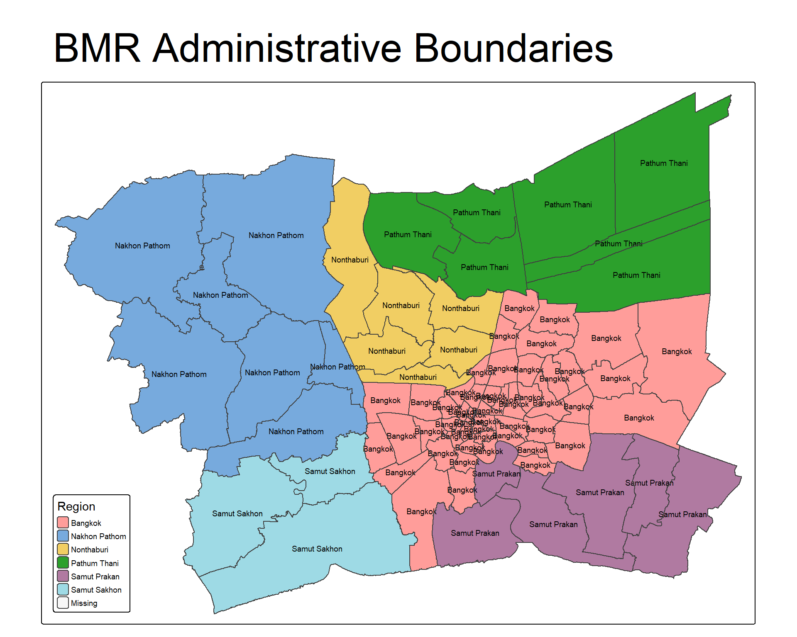
Import Thailand road network data from OpenStreetMap
Import road network data for Thailand from OpenStreetMap using the sf package.
thailand_roads <- st_read(dsn = "data/hotosm_tha_roads_lines_shp.shp", layer = "hotosm_tha_roads_lines_shp") %>%
st_set_crs(4326) %>% # Set the coordinate reference system to WGS 84 (EPSG:4326)
st_transform(crs = 32647) # UTM Zone 47N (EPSG:32647) for Bangkok Metropolitan RegionReading layer `hotosm_tha_roads_lines_shp' from data source `C:\hungthq\ISSS626-GAA\Take-home_Ex\Take-home_Ex01\data\hotosm_tha_roads_lines_shp.shp' using driver `ESRI Shapefile' Simple feature collection with 2833401 features and 14 fields Geometry type: MULTILINESTRING Dimension: XY Bounding box: xmin: 97.33814 ymin: 5.643645 xmax: 105.6528 ymax: 20.47168 Geodetic CRS: WGS 84The road network data contains ~2.8M road segments in Thailand. We will filter the data to include only the road segments within the Bangkok Metropolitan Region (BMR) for spatial analysis.
bmr_roads_orig <- thailand_roads %>%
st_intersection(bmr_adm_boundary) # Filter road segments within the BMR
NoteNote
The geospatial data is in the form of MULTILINESTRING geometries, which represent the road segments as lines. To simplify the analysis, we will convert the MULTILINESTRING geometries to LINESTRING geometries using the st_cast() function from the sf package. This will allow us to work with individual road segments as separate features.
bmr_roads <- bmr_roads_orig %>%
st_cast("LINESTRING") # Convert MULTILINESTRING to LINESTRING geometriesCheck the coordinate reference system of the BMR road network data
st_crs(bmr_roads) Coordinate Reference System: User input: EPSG:32647 wkt: PROJCRS["WGS 84 / UTM zone 47N", BASEGEOGCRS["WGS 84", ENSEMBLE["World Geodetic System 1984 ensemble", MEMBER["World Geodetic System 1984 (Transit)"], MEMBER["World Geodetic System 1984 (G730)"], MEMBER["World Geodetic System 1984 (G873)"], MEMBER["World Geodetic System 1984 (G1150)"], MEMBER["World Geodetic System 1984 (G1674)"], MEMBER["World Geodetic System 1984 (G1762)"], MEMBER["World Geodetic System 1984 (G2139)"], MEMBER["World Geodetic System 1984 (G2296)"], ELLIPSOID["WGS 84",6378137,298.257223563, LENGTHUNIT["metre",1]], ENSEMBLEACCURACY[2.0]], PRIMEM["Greenwich",0, ANGLEUNIT["degree",0.0174532925199433]], ID["EPSG",4326]], CONVERSION["UTM zone 47N", METHOD["Transverse Mercator", ID["EPSG",9807]], PARAMETER["Latitude of natural origin",0, ANGLEUNIT["degree",0.0174532925199433], ID["EPSG",8801]], PARAMETER["Longitude of natural origin",99, ANGLEUNIT["degree",0.0174532925199433], ID["EPSG",8802]], PARAMETER["Scale factor at natural origin",0.9996, SCALEUNIT["unity",1], ID["EPSG",8805]], PARAMETER["False easting",500000, LENGTHUNIT["metre",1], ID["EPSG",8806]], PARAMETER["False northing",0, LENGTHUNIT["metre",1], ID["EPSG",8807]]], CS[Cartesian,2], AXIS["(E)",east, ORDER[1], LENGTHUNIT["metre",1]], AXIS["(N)",north, ORDER[2], LENGTHUNIT["metre",1]], USAGE[ SCOPE["Navigation and medium accuracy spatial referencing."], AREA["Between 96°E and 102°E, northern hemisphere between equator and 84°N, onshore and offshore. China. Indonesia. Laos. Malaysia - West Malaysia. Mongolia. Myanmar (Burma). Russian Federation. Thailand."], BBOX[0,96,84,102]], ID["EPSG",32647]]Exploring the attributes of the BMR road network data to understand the available information for analysis.
glimpse(bmr_roads) Rows: 592,641 Columns: 16 $ name <chr> NA, NA, NA, "ถนนราชดำเนินกลาง", "ถนนราชดำเนินกลาง", NA, NA, NA, "ซอยสามเสน 1", "ถนนสมเด็จพระปิ่นเกล้า", "ถนนหน้าหับเผย", NA, NA, NA, "ถนนหน้าหับเผย", NA, NA, NA, NA, NA, NA, N… $ name_en <chr> NA, NA, NA, "Ratchadamnoen Klang Road", "Ratchadamnoen Klang Road", NA, NA, NA, "Soi Samsen 1", "Somdet Phra Pinklao Road", "Na Hap Phoei Road", NA, NA, NA, "Na Ha… $ highway <chr> "steps", "footway", "footway", "secondary", "secondary", "service", "footway", "footway", "residential", "primary", "footway", "service", "service", "service", "fo… $ surface <chr> NA, NA, NA, "asphalt", "asphalt", NA, "paving_stones", "paving_stones", "concrete", "asphalt", "paving_stones", NA, NA, NA, "paving_stones", NA, NA, NA, "paving_st… $ smoothness <chr> NA, NA, NA, NA, NA, NA, NA, NA, NA, "excellent", NA, NA, NA, NA, NA, NA, NA, NA, NA, NA, NA, NA, NA, NA, NA, NA, NA, NA, NA, NA, NA, NA, NA, NA, NA, NA, NA, NA, NA… $ width <chr> NA, NA, NA, NA, NA, NA, NA, NA, "5", NA, NA, NA, NA, NA, NA, NA, NA, NA, NA, NA, NA, NA, NA, NA, NA, NA, NA, NA, NA, NA, NA, NA, NA, NA, NA, NA, NA, NA, NA, NA, NA… $ lanes <chr> NA, NA, NA, NA, "3", NA, NA, NA, NA, "3", NA, NA, NA, NA, NA, NA, NA, NA, NA, NA, NA, NA, NA, NA, NA, NA, NA, NA, NA, NA, NA, NA, NA, NA, NA, NA, NA, NA, NA, NA, N… $ oneway <chr> NA, NA, NA, "yes", "yes", "yes", NA, NA, "yes", "yes", NA, NA, NA, NA, NA, NA, NA, NA, NA, NA, NA, NA, NA, "no", "yes", NA, "yes", NA, NA, NA, NA, NA, NA, NA, NA, … $ bridge <chr> NA, NA, NA, "yes", "yes", NA, NA, NA, NA, NA, NA, NA, NA, NA, NA, NA, NA, NA, NA, NA, NA, NA, NA, NA, NA, NA, NA, NA, NA, NA, NA, NA, NA, NA, NA, NA, NA, NA, NA, N… $ layer <chr> NA, NA, NA, "1", "1", NA, NA, NA, NA, NA, NA, NA, NA, NA, NA, NA, NA, NA, NA, NA, NA, NA, NA, NA, NA, NA, NA, NA, NA, NA, NA, NA, NA, NA, NA, NA, NA, NA, NA, NA, N… $ source <chr> NA, NA, NA, NA, NA, NA, NA, NA, NA, NA, NA, NA, NA, NA, NA, NA, NA, NA, NA, NA, NA, NA, NA, NA, NA, NA, NA, NA, NA, NA, NA, NA, NA, NA, NA, NA, NA, NA, "Bing", NA,… $ name_th <chr> NA, NA, NA, "ถนนราชดำเนินกลาง", "ถนนราชดำเนินกลาง", NA, NA, NA, "ซอยสามเสน 1", "ถนนสมเด็จพระปิ่นเกล้า", "ถนนหน้าหับเผย", NA, NA, NA, "ถนนหน้าหับเผย", NA, NA, NA, NA, NA, NA, N… $ osm_id <dbl> 826834653, 1264028727, 1264028728, 175803643, 175803646, 707021285, 1294704160, 1296288435, 274710632, 25715013, 196823083, 626858467, 1162004952, 1162004953, 1223… $ osm_type <chr> "ways_line", "ways_line", "ways_line", "ways_line", "ways_line", "ways_line", "ways_line", "ways_line", "ways_line", "ways_line", "ways_line", "ways_line", "ways_l… $ adm1_name <chr> "Bangkok", "Bangkok", "Bangkok", "Bangkok", "Bangkok", "Bangkok", "Bangkok", "Bangkok", "Bangkok", "Bangkok", "Bangkok", "Bangkok", "Bangkok", "Bangkok", "Bangkok"… $ geometry <LINESTRING [m]> LINESTRING (661956.2 151980..., LINESTRING (661230.6 151997..., LINESTRING (661234.5 151996..., LINESTRING (661606.9 152137..., LINESTRING (661637 15213…Observing the attributes of the BMR road network data, we can see that it contains information about the road segments, including their names, types, and geometries. This data will be useful for spatial analysis and visualization of road traffic accidents in relation to the road network. For further analysis, we will focus on the road segments that are classified as “primary” roads, which are major roads that connect different regions and are likely to have higher traffic volumes. We will filter the data to include only these primary road segments for spatial analysis from “highway” attribute.
Displaying the unique values in the “highway” attribute to identify the different types of roads in the BMR road network data.
unique(bmr_roads$highway)[1] "steps" "footway" "secondary" "service" "residential" "primary" "tertiary_link" "path" "secondary_link" "pedestrian" [11] "tertiary" "primary_link" "unclassified" "corridor" "cycleway" "busway" "construction" "motorway_link" "track" "trunk_link" [21] "trunk" "motorway" "proposed" "road" "raceway" "platform" Identify road type for each accident event
bmr_roads <- read_rds("data/bmr_roads.rds")
bmr_acc_sf <- read_rds("data/bmr_road_traffic_accidents_2019-2022.rds")# 1. index of the nearest road segment for every accident
nearest_idx <- st_nearest_feature(bmr_acc_sf, bmr_roads)# 2. attach highway type + snapping distance
bmr_acc_sf <- bmr_acc_sf %>%
mutate(
highway = bmr_roads$highway[nearest_idx],
dist_to_road_m = as.numeric(
st_distance(bmr_acc_sf, bmr_roads[nearest_idx, ], by_element = TRUE)),
# 3. only trust the match if the accident is close to the road
highway = if_else(dist_to_road_m <= 50, highway, "off-network (>50 m)")
)
table(bmr_acc_sf$highway)
construction cycleway footway motorway
519 4 168 5021
motorway_link off-network (>50 m) path primary
645 584 16 1537
primary_link residential secondary secondary_link
329 384 1190 186
service steps tertiary tertiary_link
659 7 278 1
track trunk trunk_link unclassified
2 1192 186 78 # Calculate frequencies and plot
bmr_acc_sf %>%
count(highway) %>%
# reorder() sorts the bars from highest to lowest frequency
ggplot(aes(x = reorder(highway, n), y = n)) +
geom_col(fill = "steelblue") +
#scale_fill_manual(values = hw_cols, guide = "none") +
coord_flip() + # Flips the chart horizontally for readable labels
labs(
title = "Number of Accidents per Highway Type",
x = "Highway Type",
y = "Number of Accidents"
) +
theme_minimal() +
# Add exact counts to the end of each bar
geom_text(aes(label = n), hjust = -0.2, size = 3.5) +
# Expand y-axis slightly so the text labels don't get cut off
scale_y_continuous(expand = expansion(mult = c(0, 0.1)))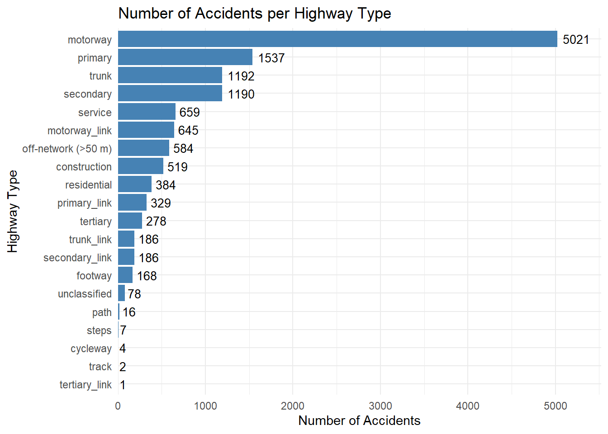
For the study purpose, we will focus on the primary roads in the BMR road network data. The primary roads are classified as “motoway”, “trunk”, “primary”, “secondary”. We will filter the data to include only these primary road segments for spatial analysis.
hw_types <- c("motorway", "trunk", "primary", "secondary","motorway_link", "trunk_link", "primary_link", "secondary_link" )
bmr_roads_filtered <- bmr_roads %>%
select("highway") %>%
filter(highway %in% hw_types)glimpse(bmr_roads_filtered)Rows: 17,528
Columns: 2
$ highway <chr> "secondary", "secondary", "primary", "secondary", "secondary", "secondary", "secondary_link", "secondary", "secondary_link", "primary", "primary", "secondary", "seco…
$ geometry <LINESTRING [m]> LINESTRING (661606.9 152137..., LINESTRING (661637 1521372,..., LINESTRING (661716.3 152142..., LINESTRING (662279.2 152244..., LINESTRING (661792.8 15202…plotting the filtered primary road network data for the Bangkok Metropolitan Region (BMR) using the tmap package.
tmap_mode("plot")
tm_shape(bmr_roads_filtered) +
tm_lines(col = "highway", title = "Road Type") +
tm_layout(main.title = "BMR Primary Road Network",
main.title.position = "center",
main.title.size = 3,
legend.position = c("left", "bottom")
)#| fig-width: 10
#| fig-height: 8
#| echo: false
bmr_roads <- readRDS("data/bmr_primary_roads.rds")
tm_shape(bmr_roads) +
tm_lines(col = "highway", title = "Road Type") +
tm_layout(main.title = "BMR Primary Road Network",
main.title.position = "center",
main.title.size = 3,
legend.position = c("left", "bottom")
)
NoteNote
By filtering the road network data to include only the primary roads, we reduce the size of the dataset from 593,000 road segments to 24,000 road segments. This will make the spatial analysis more efficient and focused on the major roads that are likely to have higher traffic volumes and accident rates.
# save the filtered primary road network data for the Bangkok Metropolitan Region (BMR) in RDS format for future use.
saveRDS(bmr_roads_filtered, file = "data/bmr_primary_roads.rds")In this exercise, we consider motorway_link, trunk_link, primary_link, secondary_link is part of motorway, trunk, primary & secondary.
5 Exploratory Data Analysis (EDA)
In this section, we will perform exploratory data analysis (EDA) on the road traffic accident data for the Bangkok Metropolitan Region (BMR). The goal of EDA is to understand the distribution and characteristics of the data, identify patterns and trends, and detect any anomalies or outliers that may affect the analysis.
5.1 Overall plot
Ploting 3 datasets onto a single choropleth map to have an general view.
tmap_mode('plot')
tm_shape(bmr_adm_boundary) +
tm_polygons(col='adm1_name', alpha=0.6, border.col="black", lwd=0.7, title = "Region") +
tm_shape(bmr_primary_roads) +
tm_lines(col = "darkgreen", lwd=1, alpha = 0.8) +
tm_shape(bmr_acc_sf) +
tm_dots(col = "red", size = 0.3, alpha = 0.5) +
tm_layout(main.title = "Road Traffic Accidents in Bangkok Metropolitan Region (2019 - 2022) - primary road",
main.title.position = "center",
main.title.size = 3,
#title.position = c("center", "top"),
legend.position = c("left", "bottom"),
legend.text.size = 0.6
)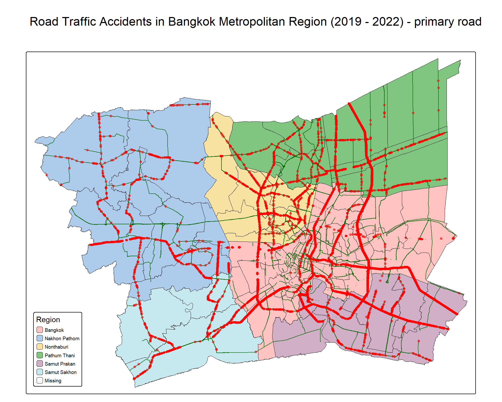
NoteNote
The overall plot provides a visual summary of the road traffic accidents in the Bangkok Metropolitan Region (BMR) for the year 2019 to 2022. It overlays the administrative boundaries, primary road network, and accident locations, allowing us to quickly identify areas with high accident density and their relation to major roads.
Observing the map, we can see that the majority of accidents are concentrated along the primary roads and in densely populated areas, highlighting the importance of focusing on these regions for traffic safety interventions.
This insight indicates that the 6 road types classified as primary roads are the most critical areas to target for traffic safety improvements and accident prevention measures.
tmap_mode('plot')
#basemap <- tm_shape(bmr_adm_boundary) +
# tm_polygons(col='grey', alpha=0.6, border.col="black", lwd=0.7, title = "Region") #+
# tm_shape(bmr_primary_roads) +
# tm_lines(col = "highway", lwd=1, alpha = 0.8) +
# tm_layout(main.title = "BMR primary roads",
# main.title.position = "center",
# main.title.size =1.5,
# legend.position = c("left", "bottom"),
# legend.text.size =0.6)
acc_map <- tm_shape(bmr_adm_boundary) +
tm_polygons(col='grey', alpha=0.6, border.col="black", lwd=0.7, title = "Region") +
tm_shape(bmr_primary_roads) +
tm_lines(col = "highway", lwd=1, alpha = 0.8) +
tm_shape(bmr_acc_sf) +
tm_dots(col = "red", size = 0.1, alpha = 0.5) +
tm_layout(main.title = "Road Traffic Accidents in Bangkok Metropolitan Region (2019 - 2022)",
main.title.position = "center",
main.title.size = 1.5,
#title.position = c("center", "top"),
legend.position = c("left", "bottom"),
legend.text.size = 0.6
)
acc_map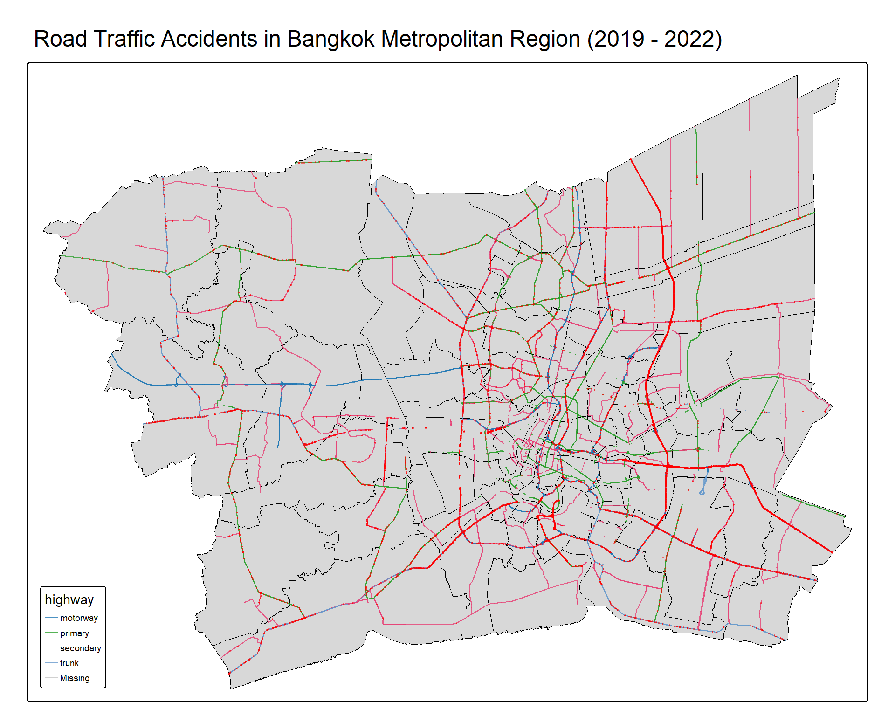
#tmap_arrange(basemap, acc_map, asp=1, ncol=2)5.2 Visualization Geographic Distribution of Accidents by cause
# Calculate frequencies and plot
bmr_acc_sf %>%
count(presumed_cause) %>%
filter(n > 9) %>%
# reorder() sorts the bars from highest to lowest frequency
ggplot(aes(x = reorder(presumed_cause, n), y = n)) +
geom_col(fill = "steelblue") +
coord_flip() + # Flips the chart horizontally for readable labels
labs(
title = "Number of Accidents by cause",
x = "Accident Type",
y = "Number of Accidents"
) +
theme_minimal() +
# Add exact counts to the end of each bar
geom_text(aes(label = n), hjust = -0.2, size = 3.5) +
# Expand y-axis slightly so the text labels don't get cut off
scale_y_continuous(expand = expansion(mult = c(0, 0.1)))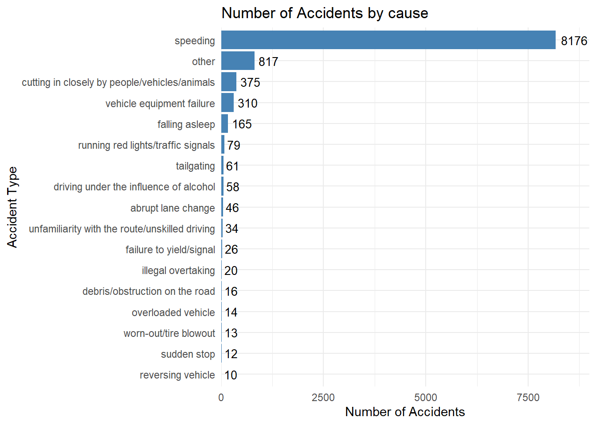
5.3 Visualization Geographic Distribution of Accidents by year
bmr_acc_sf <- bmr_acc_sf %>%
mutate(year = year(incident_datetime))tm_shape(bmr_adm_boundary) +
#tm_polygons(col='adm1_name', alpha=0.6, border.col="black", lwd=0.7, title = "Region") +
tm_shape(bmr_primary_roads) +
tm_lines(col = "darkgreen", lwd=0.7, alpha = 0.8) +
tm_shape(bmr_acc_sf) +
tm_dots(col = "red", size = 0.25, alpha = 0.6) +
tm_facets(by = "year") +
tm_layout(
main.title = "Road Traffic Accidents in Bangkok Metropolitan Region (2019-2022)",
main.title.position = c("center", "top"),
main.title.size = 0.9,
frame = FALSE,
#legend.outside = TRUE,
#legend.outside.position = "left",
#legend.outside.size = 0.25,
#legend.text.size = 0.55,
#legend.title.size = 0.7
)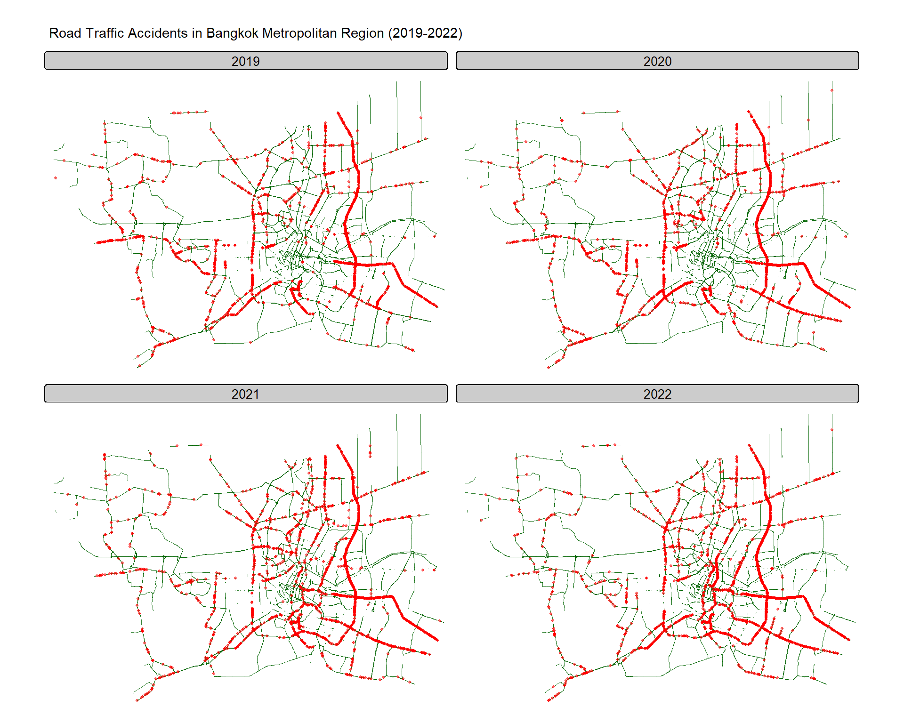
Accidents by year and province
# calculate total accidents by year
bmr_acc_by_year <- bmr_acc_sf %>%
st_drop_geometry() %>%
group_by(year) %>%
summarise(total_accidents = n())
# Calculate total accidents by province and year
bmr_acc_by_province_year <- bmr_acc_sf %>%
st_drop_geometry() %>%
group_by(year, province_en) %>%
summarise(total_accidents = n()) %>%
ungroup()
# Summarise total accidents for each year (trend)
total_accidents_by_year <- bmr_acc_by_province_year %>%
group_by(year) %>%
summarise(total_accidents = sum(total_accidents))
# create stacked bar chart for accidents by province and year
fig_acc_by_province_year <- ggplot(bmr_acc_by_province_year, aes(x = factor(year), y = total_accidents, fill = province_en)) +
geom_bar(stat = "identity") +
labs(title = "Road Traffic Accidents by Province and Year",
x = "Year",
y = "Total Accidents",
fill = "Province_en") +
theme_minimal() +
# add trend line for total accidents by year
geom_line(data = total_accidents_by_year,
aes(x = factor(year), y = total_accidents, group = 1),
color = "black", size = 1,
linetype = "dashed",
inherit.aes = FALSE)
fig_acc_by_province_year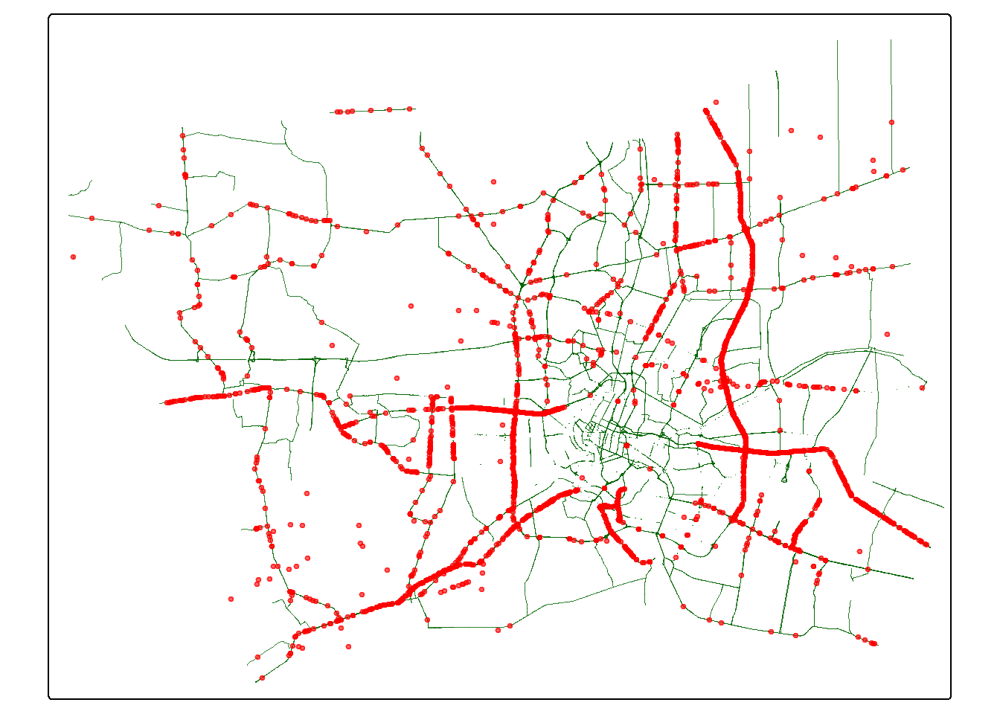
Note
- Accident trend is represented by the dashed black line in the stacked bar chart. The line indicate an uptrend in the total number of accidents over the years.
- Bangkok consistently has the highest number of accidents compared to other provinces in the Bangkok Metropolitan Region.
- The number of accidents of other provinces shows a relatively stable trend over the years.
- The number of accidents in 2022 rises compared to previous years, it’s related to the rise in number of accidents in Bangkok and Samut Prakan.
5.4 Visualization Geographic Distribution of Accidents by month
# mutate month column
bmr_acc_sf <- bmr_acc_sf %>%
mutate(month = lubridate::month(incident_datetime, label = TRUE)) # Visualization Geographic Distribution of Accidents by month
tm_shape(bmr_adm_boundary) +
#tm_polygons(col='adm1_name', alpha=0.6, border.col="black", lwd=0.7, title = "Region") +
tm_shape(bmr_primary_roads) +
tm_lines(col = "darkgreen", lwd=0.7, alpha = 0.8) +
tm_shape(bmr_acc_sf) +
tm_dots(col = "red", size = 0.25, alpha = 0.6) +
tm_facets(by = "month") +
tm_layout(
main.title = "Road Traffic Accidents by month in Bangkok Metropolitan Region (2019-2022)",
main.title.position = c("center", "top"),
main.title.size = 0.9,
frame = FALSE
)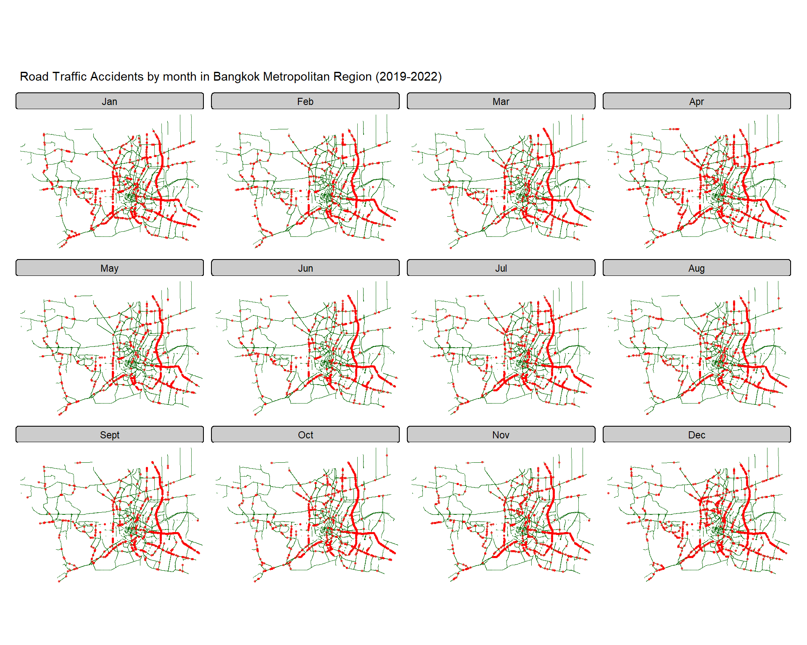
Distribution of Accidents by month
# create a summary of accidents by month and province
bmr_acc_by_month_province <- bmr_acc_sf %>%
st_drop_geometry() %>%
group_by(month, province_en) %>%
summarise(total_accidents = n()) %>%
ungroup()
# create stacked bar chart for accidents by month and province
fig_acc_by_month_province <- ggplot(bmr_acc_by_month_province, aes(x = month, y = total_accidents, fill = province_en)) +
geom_bar(stat = "identity") +
labs(title = "Road Traffic Accidents by Month and Province",
x = "Month",
y = "Total Accidents",
fill = "Province_en") +
theme_minimal()
fig_acc_by_month_province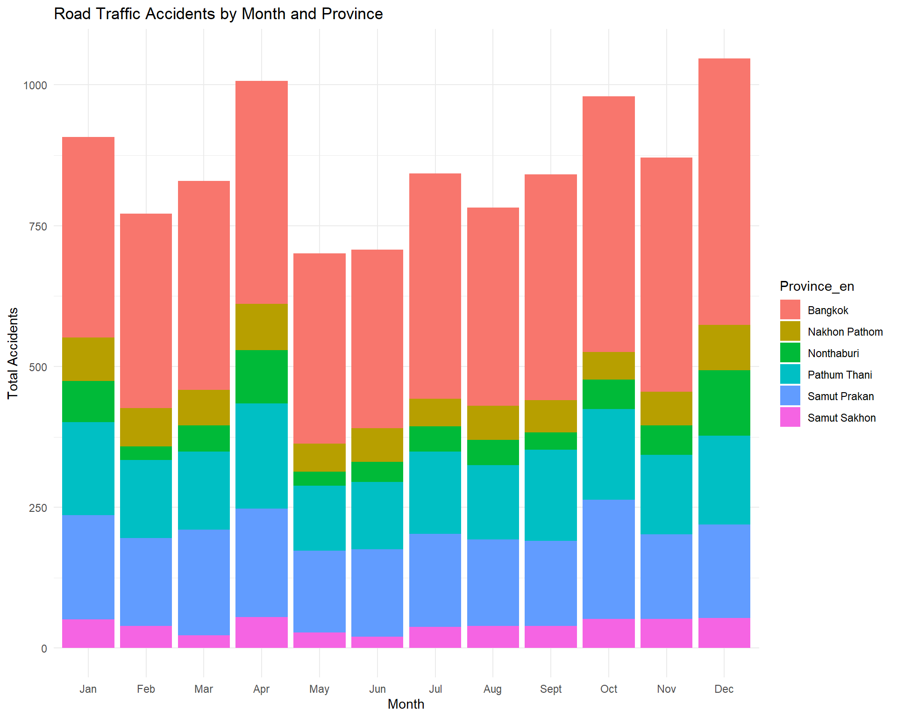
Note
- The stacked bar chart shows the distribution of road traffic accidents by month and province.
- The number of accidents spikes in certain months (e.g., April and December), indicating potential seasonal trends or periods of increased traffic activity.
5.5 Visualization Geographic Distribution of Accidents by day of the week
# mutate day of the week column
bmr_acc_sf <- bmr_acc_sf %>%
mutate(day_of_week = lubridate::wday(incident_datetime, label = TRUE)) # Visualization Geographic Distribution of Accidents by day of the week
tm_shape(bmr_adm_boundary) +
#tm_polygons(col='adm1_name', alpha=0.6, border.col="black", lwd=0.7, title = "Region") +
tm_shape(bmr_primary_roads) +
tm_lines(col = "darkgreen", lwd=0.7) +
tm_shape(bmr_acc_sf) +
tm_dots(col = "red", size = 0.25, alpha = 0.6) +
tm_facets(by = "day_of_week") +
tm_layout(
main.title = "Road Traffic Accidents by day of the week in Bangkok Metropolitan Region (2019-2022)",
main.title.position = c("center", "top"),
main.title.size = 0.9,
frame = FALSE
)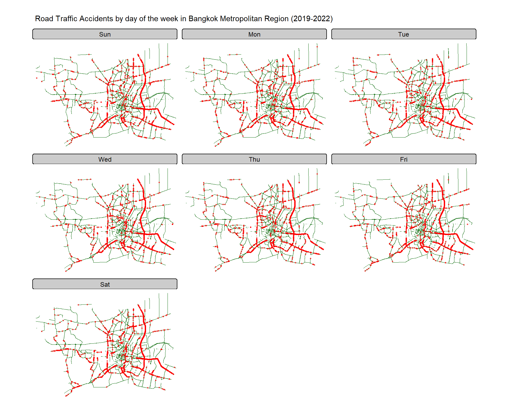
Bar chart accidents by days of the week
#compute accidents by day of the week
accidents_by_day_of_week <- bmr_acc_sf %>%
st_drop_geometry() %>%
mutate(
day_type = case_when(
day_of_week %in% c("Sat", "Sun") ~ "Weekend",
TRUE ~ "Weekday"
)
) %>%
group_by(day_of_week, day_type) %>%
summarise(total_accidents = n()) %>%
ungroup()# create a bar chart for accidents by day of the week and day type in different colors
ggplot(accidents_by_day_of_week, aes(x = day_of_week, y = total_accidents, fill = day_type)) +
geom_bar(stat = "identity", position = "dodge") +
labs(title = "Road Traffic Accidents by Day of the Week and Day Type",
x = "Day of the Week",
y = "Total Accidents",
fill = "Day Type") +
theme_minimal()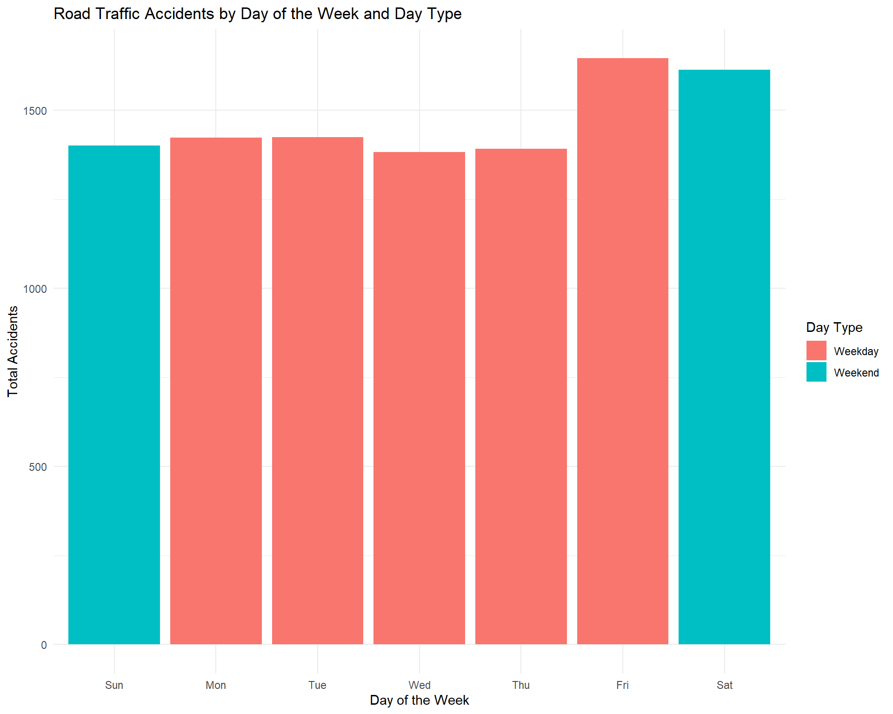
Note
- Weekdays generally have fewer accidents compared to weekends except for Friday.
- Both Friday & Saturday have relatively high numbers of accidents suggesting increased traffic activity or risky driving behavior (possibly due to social events or nightlife - parties, gatherings, or late-night activities. Be noted that in general, people tend to drink more alcohol on Friday and Saturday nights).
5.6 Visualization Geographic Distribution of Accidents by day-night
bmr_acc_sf <- bmr_acc_sf %>%
# Extract the hour (0 to 23)
mutate(hour = lubridate::hour(incident_datetime)) %>%
# Categorize into 4-hour blocks
mutate(
time_block = case_when(
hour %in% 0:3 ~ "00:00 - 03:59",
hour %in% 4:7 ~ "04:00 - 07:59",
hour %in% 8:11 ~ "08:00 - 11:59",
hour %in% 12:15 ~ "12:00 - 15:59",
hour %in% 16:19 ~ "16:00 - 19:59",
hour %in% 20:23 ~ "20:00 - 23:59"
),
# Convert to an ordered factor so plots display them in the correct time order
time_block = factor(time_block, levels = c(
"00:00 - 03:59",
"04:00 - 07:59",
"08:00 - 11:59",
"12:00 - 15:59",
"16:00 - 19:59",
"20:00 - 23:59"
))
)# Visualization Geographic Distribution of Accidents by peak hours
tmap_mode('plot')
tm_shape(bmr_adm_boundary) +
tm_shape(bmr_primary_roads) +
tm_lines(col = "darkgreen", lwd=0.7) +
tm_shape(bmr_acc_sf) +
tm_dots(col = "red", size = 0.25, fill_alpha = 0.6) +
tm_facets(by = "time_block") +
tm_title ("Road Traffic Accidents by 4h block in Bangkok Metropolitan Region (2019-2022)",
position = c("center", "top"),
size = 1.5,
)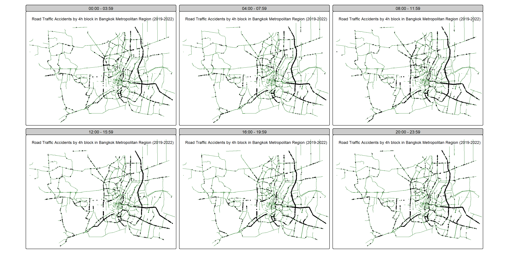
6 First-order Spatial Analysis
In this section, we will perform a first-order spatial analysis to understand the distribution of road traffic accidents in the Bangkok Metropolitan Region.
# Build owin from the BMR union, and convert to ppp
bmr_owin <- as.owin(st_union(bmr_adm_boundary))
acc_ppp <- as.ppp(st_coordinates(bmr_acc_sf), W = bmr_owin)
#acc_ppp # summary: check n, window area, unitsplot(acc_ppp, main = "BMR 2019 - 2022 Accidents")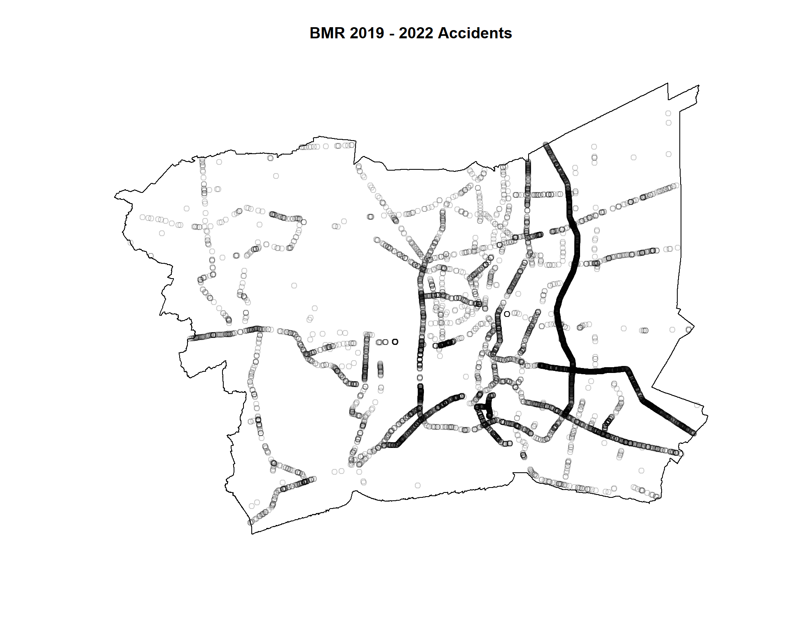
6.1 Clark-Evans Test for Nearest neighbor analysis
clark_evans_test <- clarkevans.test(acc_ppp,
correction="none",
clipregion = bmr_owin,
alternative = "clustered"
)
clark_evans_test
Clark-Evans test
No edge correction
Z-test
data: acc_ppp
R = 0.15189, p-value < 2.2e-16
alternative hypothesis: clustered (R < 1)
Note
The results provide overwhelmingly strong evidence that your traffic accidents are highly clustered rather than randomly scattered across the region. Here is the breakdown of the two key metrics:
- The R-value (0.30091): The Clark-Evans index (\(R\)) measures the distance between nearest neighbors. An \(R\) value of 1.0 means complete spatial randomness, while values greater than 1 mean points are evenly dispersed. Your value of roughly 0.152 is well below 1, meaning the accidents are highly clustered. On average, the distance between any accident and its nearest neighbor is only 15.2% of what it would be if they were distributed entirely at random.
- The p-value (< 2.2e-16): This is the smallest p-value R can display, essentially zero. It means the probability of this clustered pattern happening by random chance is virtually non-existent. We can confidently reject the null hypothesis of complete spatial randomness (CSR).
To visualize the exact locations of those clusters, we create a Kernel Density Estimation (KDE) map using the spatstat package.
Calculate the KDE to visualize accident clusters.
# Calculate the kernel density estimate
acc_kde <- density(acc_ppp, sigma = 0.1)
plot(acc_kde, main = "BMR 2019-2022 Accidents - KDE")
# add the regional boundary on top for context
plot(bmr_owin, add = TRUE, lwd = 1.5, border = "yellow")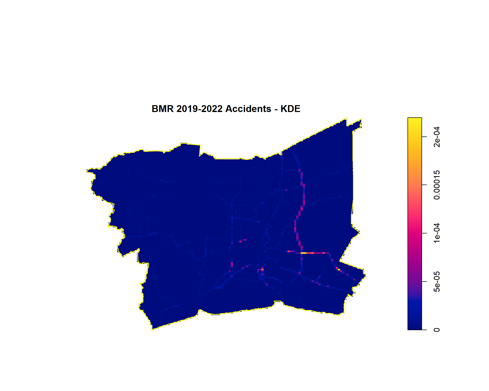
6.2 Quadrat Analysis
Note
Quadrat analysis is a foundational spatial statistics method used to determine whether a set of points (like your traffic accidents) is randomly distributed, clustered, or evenly dispersed across a study area.
Here is how it works:
The Grid: The study area is divided into a grid of equal-sized sub-regions, called “quadrats” (like laying a checkerboard over your map of the Bangkok Metropolitan Region).
The Count: The algorithm counts the number of points that fall inside each quadrat.
The Comparison: It compares the observed counts against what you would expect if the points were completely random (Complete Spatial Randomness, or CSR).
# Define the number of quadrats along x and y directions
nx <- 10
ny <- 10
# Perform quadrat count
quadrat_counts <- quadratcount(acc_ppp, nx = nx, ny = ny)
quadrat_countstile
Tile row 1, col 8 Tile row 1, col 9 Tile row 1, col 10 Tile row 2, col 1
0 0 2 0
Tile row 2, col 2 Tile row 2, col 3 Tile row 2, col 4 Tile row 2, col 5
10 3 15 6
Tile row 2, col 6 Tile row 2, col 7 Tile row 2, col 8 Tile row 2, col 9
1 57 102 6
Tile row 2, col 10 Tile row 3, col 1 Tile row 3, col 2 Tile row 3, col 3
1 2 18 36
Tile row 3, col 4 Tile row 3, col 5 Tile row 3, col 6 Tile row 3, col 7
0 29 46 130
Tile row 3, col 8 Tile row 3, col 9 Tile row 3, col 10 Tile row 4, col 1
345 56 22 9
Tile row 4, col 2 Tile row 4, col 3 Tile row 4, col 4 Tile row 4, col 5
28 40 25 54
Tile row 4, col 6 Tile row 4, col 7 Tile row 4, col 8 Tile row 4, col 9
100 157 565 75
Tile row 4, col 10 Tile row 5, col 1 Tile row 5, col 2 Tile row 5, col 3
20 0 33 18
Tile row 5, col 4 Tile row 5, col 5 Tile row 5, col 6 Tile row 5, col 7
2 0 269 217
Tile row 5, col 8 Tile row 5, col 9 Tile row 5, col 10 Tile row 6, col 1
609 10 0 0
Tile row 6, col 2 Tile row 6, col 3 Tile row 6, col 4 Tile row 6, col 5
93 80 77 69
Tile row 6, col 6 Tile row 6, col 7 Tile row 6, col 8 Tile row 6, col 9
337 264 632 10
Tile row 6, col 10 Tile row 7, col 2 Tile row 7, col 3 Tile row 7, col 4
5 0 30 79
Tile row 7, col 5 Tile row 7, col 6 Tile row 7, col 7 Tile row 7, col 8
125 271 236 1137
Tile row 7, col 9 Tile row 7, col 10 Tile row 8, col 2 Tile row 8, col 3
688 0 0 35
Tile row 8, col 4 Tile row 8, col 5 Tile row 8, col 6 Tile row 8, col 7
0 205 346 693
Tile row 8, col 8 Tile row 8, col 9 Tile row 8, col 10 Tile row 9, col 2
376 464 414 0
Tile row 9, col 3 Tile row 9, col 4 Tile row 9, col 5 Tile row 9, col 6
52 78 107 1
Tile row 9, col 7 Tile row 9, col 8 Tile row 9, col 9 Tile row 9, col 10
26 61 46 56
Tile row 10, col 2 Tile row 10, col 3 Tile row 10, col 4 Tile row 10, col 5
0 53 0 0
Tile row 10, col 6 Tile row 10, col 7 Tile row 10, col 8 Tile row 10, col 9
0 0 3 12
Tile row 10, col 10
7 # Plot the quadrat counts
plot(acc_ppp, pch = 20, cex = 0.5, main = "BMR 2022 Accidents - Quadrat Analysis")
plot(quadrat_counts, add = TRUE, col = "red")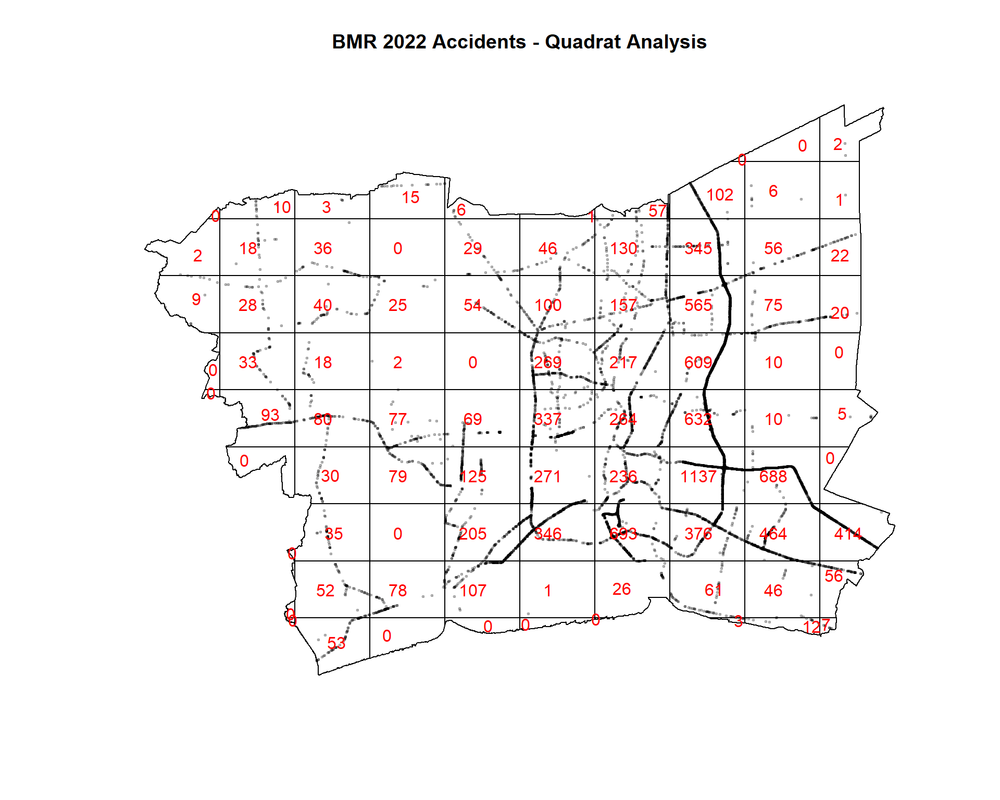
# Chi-squared test for CSR
quadrat_test <- quadrat.test(acc_ppp, nx = nx, ny = ny)
quadrat_test
Chi-squared test of CSR using quadrat counts
data: acc_ppp
X2 = 20124, df = 88, p-value < 2.2e-16
alternative hypothesis: two.sided
Quadrats: 89 tiles (irregular windows)6.3 KDE - comparing bandwidth selections
# Compare a few standard bandwidth selectors
bw_diggle <- bw.diggle(acc_ppp)
bw_ppl <- bw.ppl(acc_ppp)
bw_scott <- bw.scott(acc_ppp)
bw_diggle sigma
15.07371 bw_ppl sigma
750.5677 bw_scott sigma.x sigma.y
4638.666 3492.459 # Plot density surfaces side by side using each bandwidth
par(mfrow = c(1, 3))
plot(density(acc_ppp, sigma = bw_diggle), main = paste("bw.diggle =", round(bw_diggle)))
plot(density(acc_ppp, sigma = bw_ppl), main = paste("bw.ppl =", round(bw_ppl)))
plot(density(acc_ppp, sigma = bw_scott[1]), main = paste("bw.scott"))
par(mfrow = c(1, 1))plot(density(acc_ppp, sigma = bw_scott), main = "bw.scott")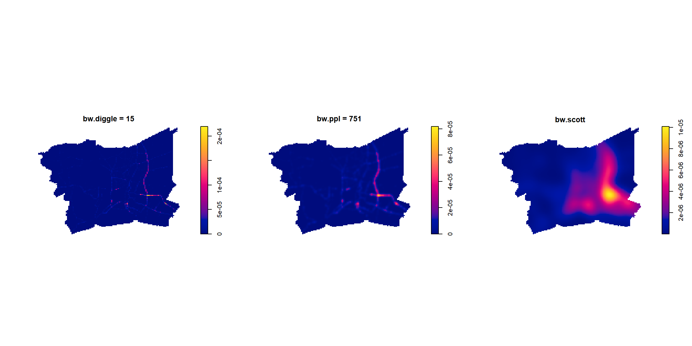
6.4 Plotting cartographic quality KDE maps
Converting gridded output into raster format for cartographic-quality plotting.
# Convert the KDE to a raster for better plotting
acc_kde_bw_terra <- rast(acc_kde)
plot(acc_kde_bw_terra, main = "Cartographic Quality KDE of Accidents")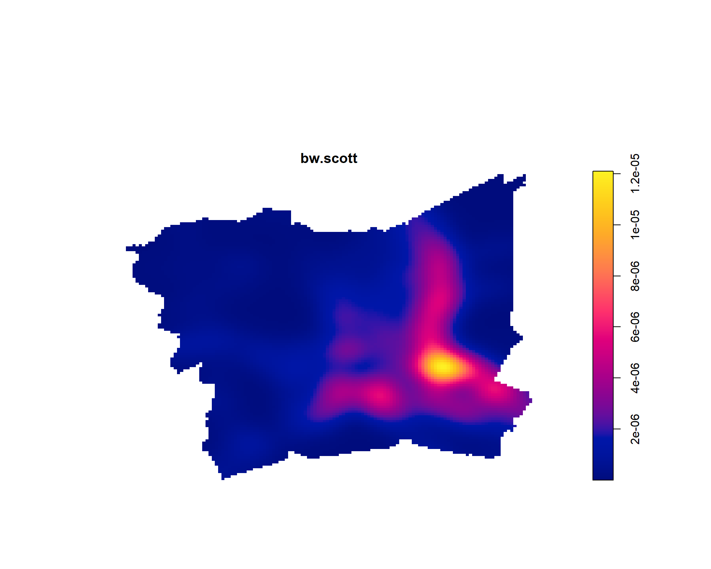
6.5 First-order SPPA at province level
Create owin object for the study window based on 6 provinces separately.
# Create owin objects for each province after projecting to the appropriate CRS
Bangkok_owin <- Bangkok %>%
st_transform(crs = 32647) %>%
as.owin()
Nonthaburi_owin <- Nonthaburi %>%
st_transform(crs = 32647) %>%
as.owin()
Pathum_Thani_owin <- Pathum_Thani %>%
st_transform(crs = 32647) %>%
as.owin()
Samut_Prakan_owin <- Samut_Prakan %>%
st_transform(crs = 32647) %>%
as.owin()
Nakhon_Pathom_owin <- Nakhon_Pathom %>%
st_transform(crs = 32647) %>%
as.owin()
Samut_Sakhon_owin <- Samut_Sakhon %>%
st_transform(crs = 32647) %>%
as.owin()Combining point events object and owin objects for each province.
# Combine point events and study window for each province
Bangkok_ppp <- acc_ppp[Bangkok_owin]
Nonthaburi_ppp <- acc_ppp[Nonthaburi_owin]
Pathum_Thani_ppp <- acc_ppp[Pathum_Thani_owin]
Samut_Prakan_ppp <- acc_ppp[Samut_Prakan_owin]
Nakhon_Pathom_ppp <- acc_ppp[Nakhon_Pathom_owin]
Samut_Sakhon_ppp <- acc_ppp[Samut_Sakhon_owin]Transform the unit of measurement from meters to kilometers for easier interpretation.
# Convert the study window and distance to road to kilometers
# use spatstat.geom::rescale to convert units from meters to kilometers
# we cannot use rescale as ggplot2 also has a function named rescale, which could cause conflicts
Bangkok_ppp <- spatstat.geom::rescale(Bangkok_ppp, 1000, "km")
Nonthaburi_ppp <- spatstat.geom::rescale(Nonthaburi_ppp, 1000, "km")
Pathum_Thani_ppp <- spatstat.geom::rescale(Pathum_Thani_ppp, 1000, "km")
Samut_Prakan_ppp <- spatstat.geom::rescale(Samut_Prakan_ppp, 1000, "km")
Nakhon_Pathom_ppp <- spatstat.geom::rescale(Nakhon_Pathom_ppp, 1000, "km")
Samut_Sakhon_ppp <- spatstat.geom::rescale(Samut_Sakhon_ppp, 1000, "km")Plot these 6 projected study windows.
par(mfrow = c(2, 3))
plot(Bangkok_ppp, main = "Bangkok")
plot(Nonthaburi_ppp, main = "Nonthaburi")
plot(Pathum_Thani_ppp, main = "Pathum Thani")
plot(Samut_Prakan_ppp, main = "Samut Prakan")
plot(Nakhon_Pathom_ppp, main = "Nakhon Pathom")
plot(Samut_Sakhon_ppp, main = "Samut Sakhon")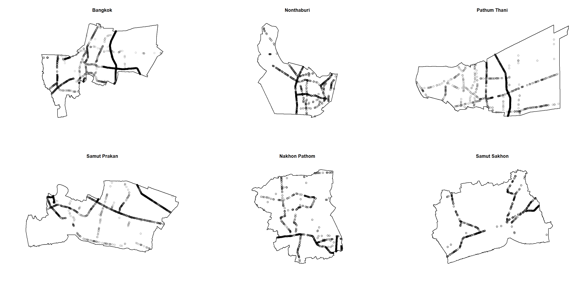
par(mfrow = c(1, 1))Clark-Evans test for spatial randomness of accidents in each province.
clark_evans_bangkok <- clarkevans.test(Bangkok_ppp, correction = "none", clipregion = Bangkok_owen, alternative = "two.sided", nsim = 999)
clark_evans_nonthaburi <- clarkevans.test(Nonthaburi_ppp, correction = "none", clipregion = Nonthaburi_owen, alternative = "two.sided", nsim = 999)
clark_evans_pathum_thani <- clarkevans.test(Pathum_Thani_ppp, correction = "none", clipregion = Pathum_Thani_owen, alternative = "two.sided", nsim = 999)
clark_evans_samut_prakan <- clarkevans.test(Samut_Prakan_ppp, correction = "none", clipregion = Samut_Prakan_owen, alternative = "two.sided", nsim = 999)
clark_evans_nakhon_pathom <- clarkevans.test(Nakhon_Pathom_ppp, correction = "none", clipregion = Nakhon_Pathom_owen, alternative = "two.sided", nsim = 999)
clark_evans_samut_sakhon <- clarkevans.test(Samut_Sakhon_ppp, correction = "none", clipregion = Samut_Sakhon_owen, alternative = "two.sided", nsim = 999)
clark_evans_bangkok
Clark-Evans test
No edge correction
Z-test
data: Bangkok_ppp
R = 0.10668, p-value < 2.2e-16
alternative hypothesis: two-sidedclark_evans_nonthaburi
Clark-Evans test
No edge correction
Z-test
data: Nonthaburi_ppp
R = 0.25159, p-value < 2.2e-16
alternative hypothesis: two-sidedclark_evans_pathum_thani
Clark-Evans test
No edge correction
Z-test
data: Pathum_Thani_ppp
R = 0.18885, p-value < 2.2e-16
alternative hypothesis: two-sidedclark_evans_samut_prakan
Clark-Evans test
No edge correction
Z-test
data: Samut_Prakan_ppp
R = 0.13397, p-value < 2.2e-16
alternative hypothesis: two-sidedclark_evans_nakhon_pathom
Clark-Evans test
No edge correction
Z-test
data: Nakhon_Pathom_ppp
R = 0.23754, p-value < 2.2e-16
alternative hypothesis: two-sidedclark_evans_samut_sakhon
Clark-Evans test
No edge correction
Z-test
data: Samut_Sakhon_ppp
R = 0.1878, p-value < 2.2e-16
alternative hypothesis: two-sidedComputing KDE surfaces using bw.diggle method for each province.
bw_bangkok <- bw.diggle(Bangkok_ppp)
bw_nonthaburi <- bw.diggle(Nonthaburi_ppp)
bw_pathum_thani <- bw.diggle(Pathum_Thani_ppp)
bw_samut_prakan <- bw.diggle(Samut_Prakan_ppp)
bw_nakhon_pathom <- bw.diggle(Nakhon_Pathom_ppp)
bw_samut_sakhon <- bw.diggle(Samut_Sakhon_ppp)
kde_bangkok <- density(Bangkok_ppp, sigma = bw_bangkok)
kde_nonthaburi <- density(Nonthaburi_ppp, sigma = bw_nonthaburi)
kde_pathum_thani <- density(Pathum_Thani_ppp, sigma = bw_pathum_thani)
kde_samut_prakan <- density(Samut_Prakan_ppp, sigma = bw_samut_prakan)
kde_nakhon_pathom <- density(Nakhon_Pathom_ppp, sigma = bw_nakhon_pathom)
kde_samut_sakhon <- density(Samut_Sakhon_ppp, sigma = bw_samut_sakhon)
par(mfrow = c(2, 3))
plot(kde_bangkok, main = "Bangkok KDE")
plot(kde_nonthaburi, main = "Nonthaburi KDE")
plot(kde_pathum_thani, main = "Pathum Thani KDE")
plot(kde_samut_prakan, main = "Samut Prakan KDE")
plot(kde_nakhon_pathom, main = "Nakhon Pathom KDE")
plot(kde_samut_sakhon, main = "Samut Sakhon KDE")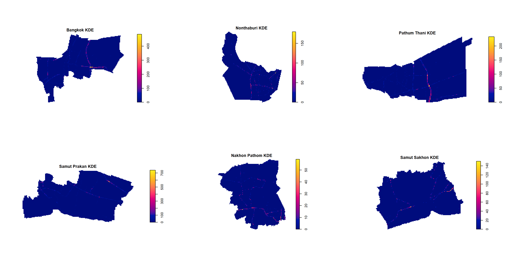
par(mfrow = c(1, 1))Computing KDE surfaces using bw.scott method for each province.
bw_bangkok <- bw.scott(Bangkok_ppp)
bw_nonthaburi <- bw.scott(Nonthaburi_ppp)
bw_pathum_thani <- bw.scott(Pathum_Thani_ppp)
bw_samut_prakan <- bw.scott(Samut_Prakan_ppp)
bw_nakhon_pathom <- bw.scott(Nakhon_Pathom_ppp)
bw_samut_sakhon <- bw.scott(Samut_Sakhon_ppp)
kde_bangkok <- density(Bangkok_ppp, sigma = bw_bangkok)
kde_nonthaburi <- density(Nonthaburi_ppp, sigma = bw_nonthaburi)
kde_pathum_thani <- density(Pathum_Thani_ppp, sigma = bw_pathum_thani)
kde_samut_prakan <- density(Samut_Prakan_ppp, sigma = bw_samut_prakan)
kde_nakhon_pathom <- density(Nakhon_Pathom_ppp, sigma = bw_nakhon_pathom)
kde_samut_sakhon <- density(Samut_Sakhon_ppp, sigma = bw_samut_sakhon)
par(mfrow = c(2, 3))
plot(kde_bangkok, main = "Bangkok KDE Scott")
plot(kde_nonthaburi, main = "Nonthaburi KDE Scott")
plot(kde_pathum_thani, main = "Pathum Thani KDE Scott")
plot(kde_samut_prakan, main = "Samut Prakan KDE Scott")
plot(kde_nakhon_pathom, main = "Nakhon Pathom KDE Scott")
plot(kde_samut_sakhon, main = "Samut Sakhon KDE Scott")
par(mfrow = c(1, 1))7 Second-Order Spatial Point Pattern Analysis
7.1 Analysis usinng G-function
Calculating G-function estimation
# ---- G-function ----
G_acc <- Gest(acc_ppp, correction = "border")
plot(G_acc, xlim = c(0, 500))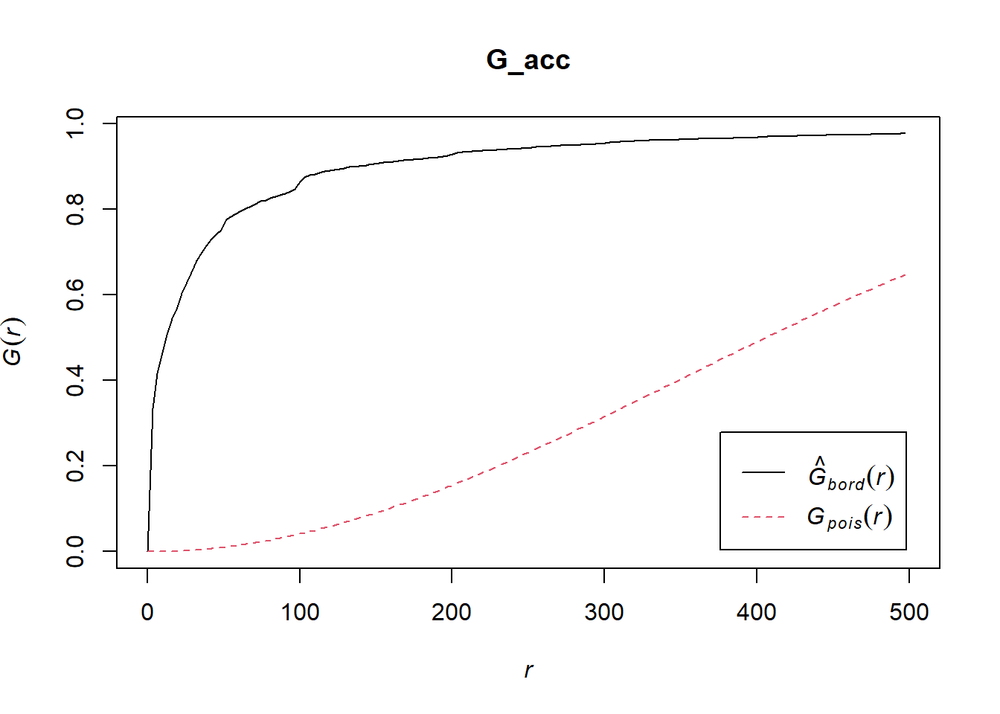
Performing complete spatial randomness test
G_acc.csr <- envelope(acc_ppp, Gest, nsim = 99, rank = 1, global = FALSE)
plot(G_acc.csr)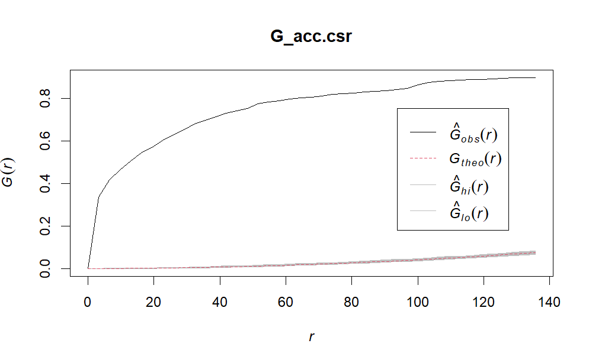
7.2 Analysis using F-function
Calculating F-function estimation
# ---- F-function ----
F_acc <- Fest(acc_ppp)
plot(F_acc)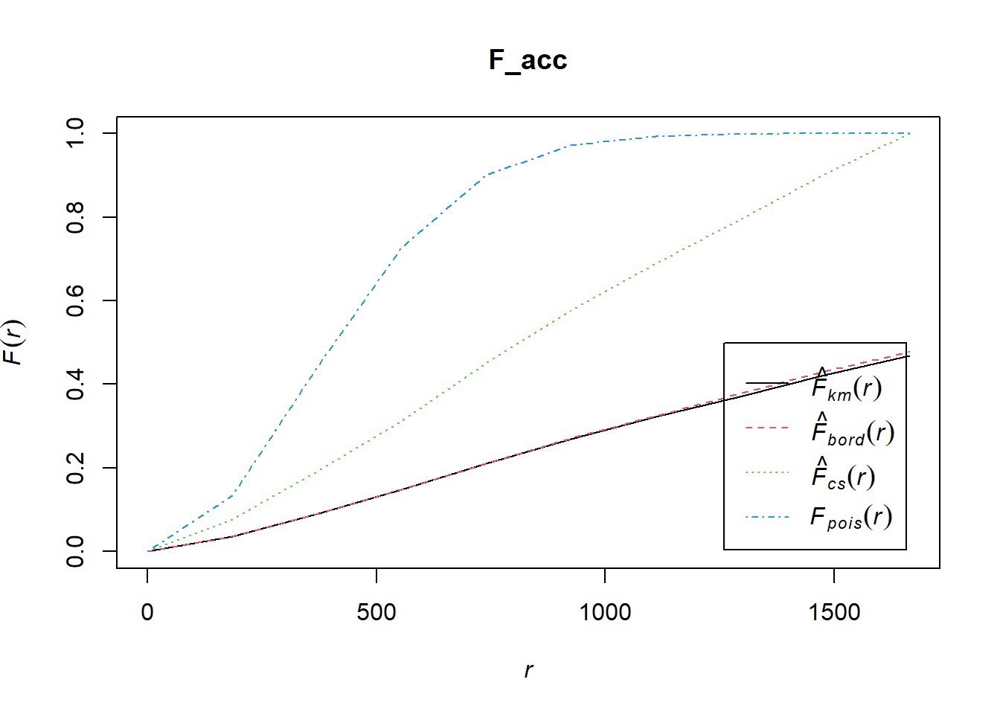
Performing complete spatial randomness test
F_acc.csr <- envelope(acc_ppp, Fest, nsim = 99, rank = 1, global = FALSE)
plot(F_acc.csr)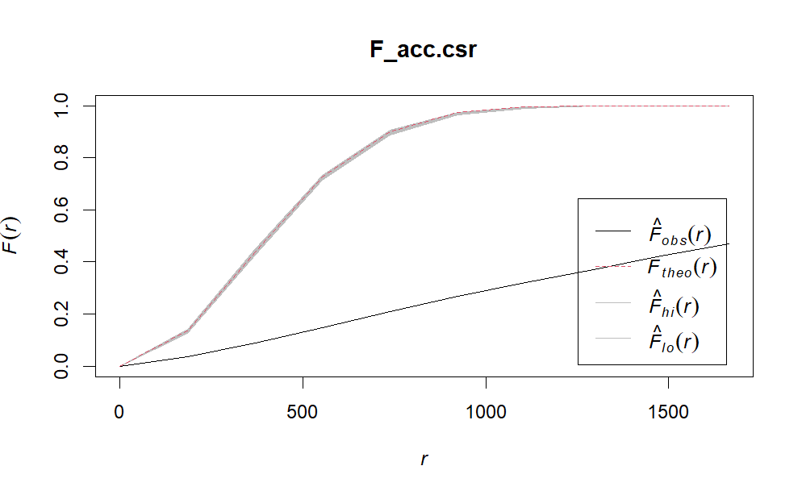
Note
inteprete of the f-function csr test:
Observed vs. Theoretical: The solid black line representing observed data, \(\hat{F}_{obs}(r)\), sits substantially below the red dashed line representing Complete Spatial Randomness, \(F_{theo}(r)\).
Empty Space Interpretation: The F-function measures the distance from a randomly selected point in empty space to the nearest event (accident). Because the observed curve is lower than the theoretical curve, it means that if we pick a random spot on the map, the probability of an accident being within distance \(r\) is much lower than expected under a random distribution. This occurs because the points are tightly clumped together, leaving exceptionally large areas of empty space.
Statistical Significance: The red theoretical curve is tightly hugged by the grey simulation envelopes, \(\hat{F}_{hi}(r)\) and \(\hat{F}_{lo}(r)\). Because the observed black line falls entirely outside of these upper and lower bounds across the chart, the deviation from spatial randomness is highly statistically significant.
7.3 Analysis using K-function & L-funcion
Calculating K-function estimation
# ---- K-function ----
K_acc <- Kest(acc_ppp, correction = "Ripley")
plot(K_acc, . - r ~ r, ylab = "K(d)-r", xlab = "d(m)")
# ---- L-function ----
L_acc <- Lest(acc_ppp, correction = "Ripley")
plot(L_acc, . - r ~ r, ylab = "L(d)-r", xlab = "d(m)")Performing complete spatial randomness test
K_acc.csr <- envelope(acc_ppp, Kest, nsim = 99, rank = 1, global = FALSE)
plot(K_acc.csr, . - r ~ r, xlab = "d", ylab = "K(d)-r")
L_acc.csr <- envelope(acc_ppp, Lest, nsim = 99, rank = 1, global = FALSE)
plot(L_acc.csr, . - r ~ r, xlab = "d", ylab = "L(d)-r")
Note
Generating 99 simulated realisations of CSR ... 1, 2, [1.7 days remaining, estimate finish 2026-09-27 04:27:49]
K & L function test processing take a long time, then I decided to skip these two method.8 Integration and Interpretation
8.1 What does the first-order analysis reveal about event intensity or distribution?
Your first-order analysis shows that accident intensity across the Bangkok Metropolitan Region is strongly inhomogeneous. Accidents pile up in a small number of core areas instead of spreading evenly.
The quadrat test rejects uniform intensity decisively. X² = 20,675 on 88 df, p < 2.2e-16. The counts themselves tell the story better than the test statistic, and your write-up could say so:
- The 89 tiles hold about 12,986 accidents, roughly 146 per tile on average.
- The actual counts run from 0 to 1,186. 13 tiles are completely empty, and several more have only 1–3 accidents.
- The 13 busiest tiles, about 15% of the area, hold roughly 63% of all accidents (about 8,180).
- The heaviest tiles (1,186, 822, 797, 695, 689, 623, 586, 556) sit together in rows 4–8, columns 5–9.
- That’s a contiguous high-intensity core, not scattered spikes.
- The edge tiles (rows 1, 9–10, column 1) are close to empty, so intensity drops sharply away from the core.
The Clark-Evans ratio confirms strong clustering. R ≈ 0.19 for the whole region, far below 1.
The province-level results show that intensity differs within each province too. Every province is significantly clustered, and the degree varies:
| Province | R |
|---|---|
| Bangkok | 0.12 (most clustered) |
| Samut Prakan | 0.14 |
| Samut Sakhon | 0.24 |
| Pathum Thani | 0.25 |
| Nakhon Pathom | 0.29 |
| Nonthaburi | 0.39 (least clustered) |
Bangkok and Samut Prakan have the most concentrated patterns, which fits dense urban arterials and expressway corridors. Nonthaburi’s accidents are comparatively more spread out.
8.2 What does the second-order analysis reveal about interaction among events?
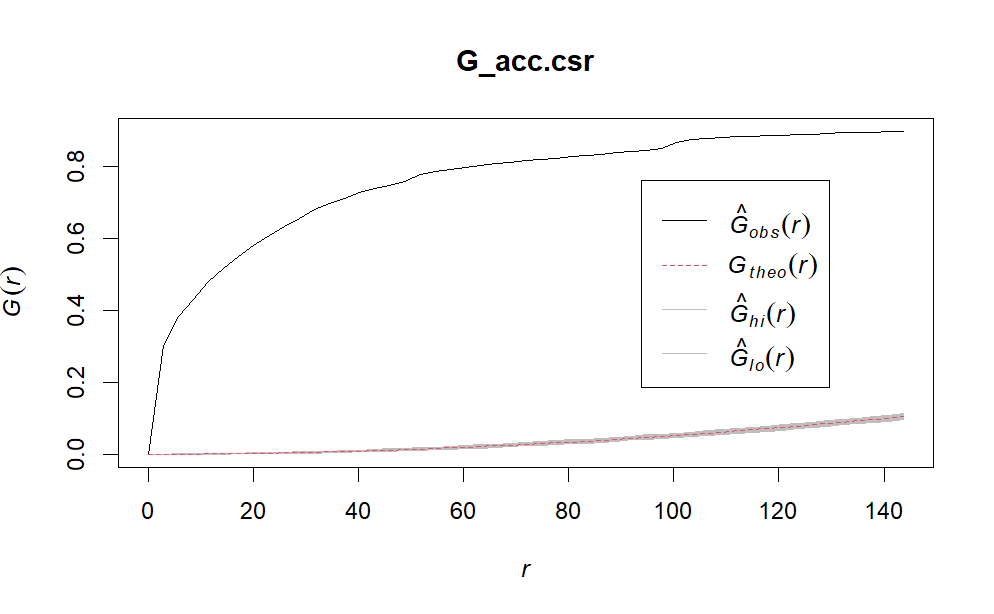
The observed G function lies far above the CSR envelope at every distance shown. Accidents have nearest neighbours much closer than they would if they were randomly scattered, so the null hypothesis of complete spatial randomness is rejected in favour of clustering.
Reading the curve
Ĝ(r) is the proportion of accidents whose nearest neighbouring accident is within r metres.
| Distance r | Observed Ĝ(r) | Under CSR |
|---|---|---|
| ~3 m | ~0.30 | ~0.00 |
| 10 m | ~0.48 | ~0.00 |
| 20 m | ~0.58 | ~0.00 |
| 50 m | ~0.76 | ~0.01 |
| 100 m | ~0.86 | ~0.05 |
| ~143 m | ~0.90 | ~0.10 |
Clustering at very short range: about half of all accidents have another accident within roughly 10 m, and about three-quarters within roughly 50 m. Under CSR almost none would.
The gap is huge at every distance: the envelope (grey band) is so narrow that the result isn’t borderline anywhere. The observed curve is 9 to 50 times the theoretical value across the whole range. The outcome is obvious, the accident events are very clusterly distributed.
Rapid rise, then a plateau: the curve climbs steeply below 30 m and levels off around 0.9. So about 10% of accidents have no neighbour within ~143 m. These are probably the isolated accidents in the sparse outer tiles your quadrat analysis found.
8.3 How do the first-order and second-order findings complement each other?
The two analyses answer different questions, and together they give a fuller picture than either one alone.
First-order (quadrat test, KDE, province-level analysis) answers where and how many: how accident intensity varies across the region.
Second-order answers how close together: whether accidents occur near other accidents more than chance would predict.
Common result between the 2 methods
Both reject complete spatial randomness, using independent evidence:
First-order: quadrat counts range from 0 to 1,186 per tile. About 15% of the area holds about 63% of accidents. The Clark-Evans ratio is about 0.19.
Second-order: about half of all accidents have another accident within roughly 10 m, while random scattering would give almost none.
They describe clustering at different scales:
Regional scale (kilometres), from first-order
Local scale (metres), from second-order
8.4 Are the findings consistent across different analytical views?
The findings are consistent across analytical views in their main conclusion. The Clark-Evans tests (overall and for each province), the quadrat test, KDE and the G function all reject complete spatial randomness and indicate strong clustering, with Bangkok the most concentrated province. The KDE bandwidth comparison shows that the apparent hotspot pattern depends on scale: broad regional concentration at kilometre bandwidths and site-level black spots at tens of metres, a scale that matches the G-function results. Consistency over time is supported only visually by the faceted maps. Formal spatio-temporal testing and inhomogeneous second-order analysis are still needed to confirm that the clustering is stable over time and not simply a product of uneven intensity along the road network.
8.5 What assumptions or limitations should be considered when interpreting the results?
These results should be interpreted with several limitations in mind. First, the analysis treats space as a continuous plane, whereas accidents are confined to the road network; combined with a homogeneous CSR null model, this biases all tests toward detecting clustering and prevents first-order concentration from being separated from genuine interaction between events. Second, the data contain many near-duplicate coordinates and exclude records with missing locations, and may under-represent roads outside national highway jurisdiction. Third, without traffic volume data, intensity reflects accident counts rather than risk. Finally, the results depend on the analyst’s choices of study window, quadrat grid and KDE bandwidth, and edge effects were not corrected. Network-constrained and inhomogeneous methods, exposure-adjusted rates, and spatio-temporal analysis would strengthen the conclusions.
8.6 Are there alternative explanations for the observed patterns?
The accidents might appear clustered for several reasons rather than a single underlying cause:
Physical Layout: Crashes naturally concentrate in high-traffic areas, busy intersections, and major highway junctions.
Data Quirks: Location tracking might be imprecise (pinning multiple accidents to one general landmark), and local roads might be missing from the dataset entirely.
Time Compression: Plotting four years of data at once makes accidents look grouped, even if they happened months or years apart. Only crashes happening at the exact same time and place (like a pile-up) are genuinely connected.
Peak Periods: Weekend and holiday spikes could just mean more cars are on the road, stricter police reporting, or increased drunk driving.
9 Geovisualisation and Analytical Interpretation
9.1 District choropleths (per km²)
bmr_district <- readRDS("data/bmr_district.rds")
acc_joined <- st_join(bmr_acc_sf, bmr_district, join = st_within) %>%
filter(!is.na(adm2_pcode))Calculate district densities per km² and per year
district_density <- bmr_district %>%
left_join(acc_joined %>% st_drop_geometry() %>% count(adm2_pcode, name = "n_acc"),
by = "adm2_pcode") %>%
mutate(n_acc = replace_na(n_acc, 0),
acc_per_km2 = n_acc / area_km2) %>%
arrange(desc(acc_per_km2))Plot choropleths for district-level accident densities
tmap_mode("plot")
#basemap <- tm_shape(district_density) +
# tm_polygons() +
# tm_text("adm2_name", size=0.5) +
# tm_layout(legend.position = c("left", "bottom"))
acc_dens <- qtm(district_density, "acc_per_km2") +
tm_layout(
main.title = "District-level accident densities per km²",
main.title.size = 2,
legend.position = c("left", "bottom"),
legend.text.size = 0.5,
legend.title.size = 1) +
tm_layout(legend.position = c("left", "bottom"))
acc_dens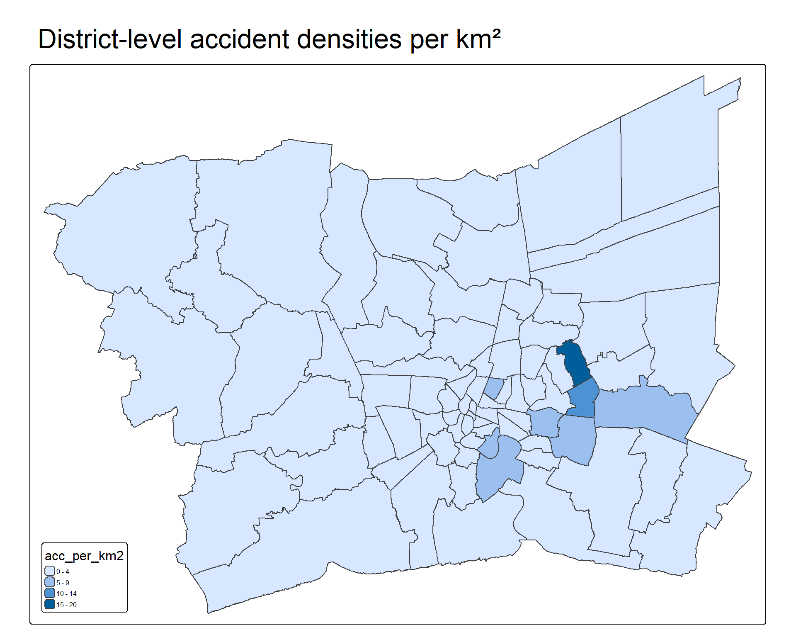
#tmap_arrange(basemap, acc_dens, asp=1, ncol=2)District-level accident densities per km² >= 10
district_density_high <- district_density %>%
filter(acc_per_km2 >= 5) %>%
arrange(desc(acc_per_km2))
district_density_highSimple feature collection with 8 features and 6 fields
Geometry type: MULTIPOLYGON
Dimension: XY
Bounding box: xmin: 663800 ymin: 1503873 xmax: 703157 ymax: 1532571
Projected CRS: WGS 84 / UTM zone 47N
adm1_name adm2_name adm2_pcode area_km2 n_acc acc_per_km2
1 Bangkok Khan Na Yao TH1043 25.533979 422 16.526997
2 Bangkok Saphan Sung TH1044 27.977854 385 13.760884
3 Bangkok Yan Nawa TH1012 12.393204 123 9.924794
4 Bangkok Prawet TH1032 53.892367 523 9.704528
5 Bangkok Phaya Thai TH1014 9.253907 68 7.348248
6 Bangkok Lat Krabang TH1011 128.643059 913 7.097157
7 Samut Prakan Phra Pradaeng TH1104 58.973165 412 6.986228
8 Bangkok Suan Luang TH1034 24.379370 156 6.398853
geometry
1 MULTIPOLYGON (((680806.2 15...
2 MULTIPOLYGON (((685556.9 15...
3 MULTIPOLYGON (((667818.3 15...
4 MULTIPOLYGON (((680695.6 15...
5 MULTIPOLYGON (((667624 1525...
6 MULTIPOLYGON (((694497.3 15...
7 MULTIPOLYGON (((670827.4 15...
8 MULTIPOLYGON (((677751.8 15...export district_density_high to a table with adm1_name and adm2_name, acc_per_km2 and n_acc and acc_per_km2
district_density_high %>%
#drop the geometry column
st_drop_geometry() %>%
select(adm1_name, adm2_name, acc_per_km2, n_acc, acc_per_km2) %>%
knitr::kable()Top districts by accident density per km²
| Province | District | accident/km2 | Number of accidents |
|---|---|---|---|
| Bangkok | Khan Na Yao | 16.526997 | 422 |
| Bangkok | Saphan Sung | 13.760884 | 385 |
| Bangkok | Yan Nawa | 9.924794 | 123 |
| Bangkok | Prawet | 9.704528 | 523 |
| Bangkok | Phaya Thai | 7.348248 | 68 |
| Bangkok | Lat Krabang | 7.097157 | 913 |
| Samut Prakan | Phra Pradaeng | 6.986228 | 412 |
| Bangkok | Suan Luang | 6.398853 | 156 |
9.2 Network KDE on the primary road (highest value)
lixels <- lixelize_lines(bmr_primary_roads, 500, mindist = 250)
samples <- lines_center(lixels)
nkde <- nkde(bmr_primary_roads, events = bmr_acc_sf,
w = rep(1, nrow(bmr_acc_sf)), samples = samples,
kernel_name = "quartic", bw = 300, div = "bw",
method = "simple", digits = 1, tol = 1,
grid_shape = c(10, 10), max_depth = 8,
agg = 5, sparse = TRUE, verbose = FALSE)
lixels$density <- nkde * 1000 # accidents per km of roadnz <- lixels$density[lixels$density > 0]
brks <- unique(c(0, quantile(nz, c(0.5, 0.75, 0.9, 0.95, 0.99)), max(nz)))
pal <- c("#fee5d9", "#fcae91", "#fb6a4a", "#de2d26", "#a50f15", "#67000d")[seq_len(length(brks) - 1)]
tm_shape(bmr_district) + tm_borders(col = "grey85") +
tm_shape(filter(lixels, density == 0)) + tm_lines(col = "grey85", lwd = 0.5) +
tm_shape(filter(lixels, density > 0) %>% arrange(density)) +
tm_lines(col = "density", lwd = 2,
col.scale = tm_scale_intervals(breaks = brks, values = pal),
col.legend = tm_legend(title = "NKDE density")) +
tm_title("Network KDE of road accidents, BMR (bw = 300 m)")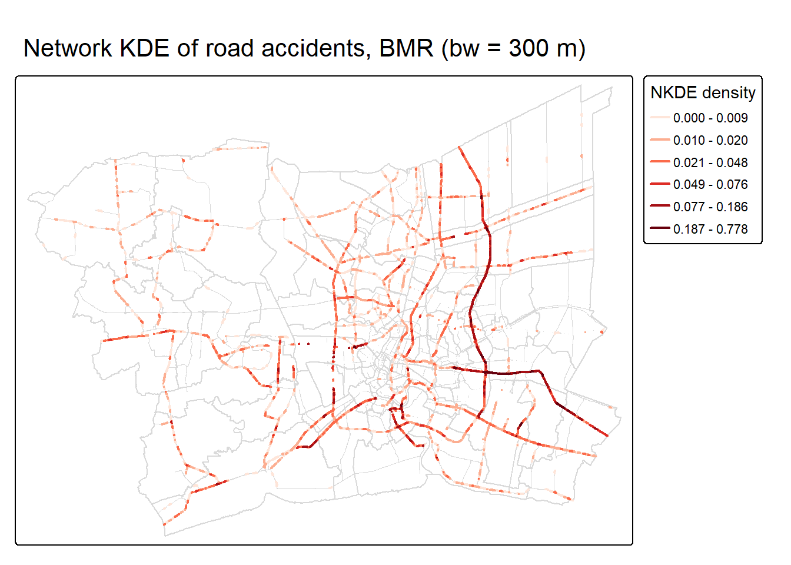
Note
Interpretation
Accidents concentrate on a few segments. 68% of the primary road network had no accident within 300 m in 2022. The darkest class, the top 1% of segments that have accidents (about 35 km), carries the highest density. This confirms the segment-scale clustering the G-function found.
The main hotspot is the eastern expressway corridor. It runs north–south along eastern Bangkok and then south-east through Khan Na Yao, Saphan Sung, Prawet and Lat Krabang, the same districts that top the per-km² choropleth.
9.3 Road accidents during Thais New-Year period (Songkran 11-17 Apr)
Based on EDA, we saw that the accidents increased significantly in Apr, it could related to 7 dangerous days 11-17 Apr - Songkran holidays.
# 1. Accidents per calendar day
daily_acc <- bmr_acc_sf %>%
st_drop_geometry() %>%
mutate(date = as_date(incident_datetime)) %>%
count(date, name = "n_acc") %>%
complete(date = seq(as_date("2019-01-01"), as_date("2022-12-31"), by = "day"),
fill = list(n_acc = 0)) %>%
mutate(songkran = if_else(month(date) == 4 & day(date) %in% 11:17, "Songkran", "Normal"),
songkran = factor(songkran, levels = c("Normal", "Songkran")))# 2. Average accidents per day
avg_acc <- daily_acc %>%
group_by(songkran) %>%
summarise(n_days = n(),
total_acc = sum(n_acc),
avg_per_day = mean(n_acc),
sd = sd(n_acc), .groups = "drop") %>%
mutate(ratio_vs_normal = avg_per_day / avg_per_day[songkran == "Normal"])
avg_acc# A tibble: 2 × 6
songkran n_days total_acc avg_per_day sd ratio_vs_normal
<fct> <int> <int> <dbl> <dbl> <dbl>
1 Normal 1433 9943 6.94 3.72 1
2 Songkran 28 343 12.2 7.01 1.77Plotting Average number of accidents per day
ggplot(avg_acc, aes(x = songkran, y = avg_per_day, fill = songkran)) +
geom_col(width = 0.55) +
theme(
axis.title = element_text(size = 14), # Increases both X and Y axis titles
axis.text = element_text(size = 12), # Increases the tick mark numbers/text
plot.title = element_text(size = 16, face = "bold"), # Increases the main plot title
legend.text = element_text(size = 12) # Increases legend item text
) +
geom_text(
aes(label = round(avg_per_day, 2)), # Rounds the label to 1 decimal place
vjust = -0.5,
size = 3,
lineheight = 0.9
) +
scale_x_discrete(labels = c("Normal" = "Normal days",
"Songkran" = "Songkran, 11-17 Apr")) +
labs(title = "Average accidents per day: Songkran vs Normal days",
subtitle = "Bangkok Metropolitan Region, 2019-2022",
x = NULL, y = "Average accidents per day") 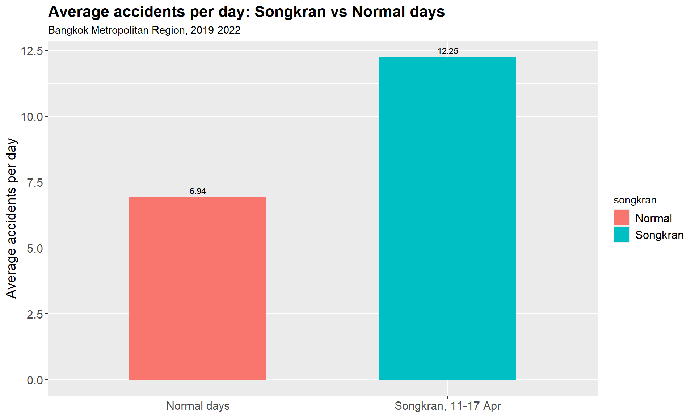
Note
On average, the Bangkok Metropolitan Region had 12.25 road accidents per day during Songkran (11–17 April), against 6.94 on normal days between 2019 and 2022. That is about 1.77 times as many, or 77% more accidents per day. The seven-day holiday period is a clear temporal hotspot.
10 Public-Safety Planning and Management
Transportation and road-safety planning
Road-safety planning should work at two spatial scales. At the regional scale, the KDE and district choropleths identify where planning effort should be concentrated: central Bangkok. At the site scale, the G-function shows that accidents recur at specific points, along the main roads and intersections where targeted interventions can be implemented.
Emergency response planning
The strong spatial and temporal concentration supports demand-based deployment of emergency resources. Ambulances and rescue units can be pre-positioned near persistent hotspots.Deployment can also be scaled up during the peak periods identified in the EDA: Friday and Saturday evenings, and the April (Songkran) and December (New Year) holiday periods.
Public-safety policy
Because hot spots and road corridors cross provincial boundaries, policy should be coordinated across the six provinces and the agencies responsible for different road classes, supported by a shared, standardised accident database.
Cautions for decision-makers
These recommendations rest on accident counts in planar space, pooled over 2019–2022, and may not fully capture dynamic changes in traffic patterns, road conditions, or enforcement measures. Decision-makers should complement this analysis with real-time data and local knowledge to ensure effective and context-sensitive interventions.